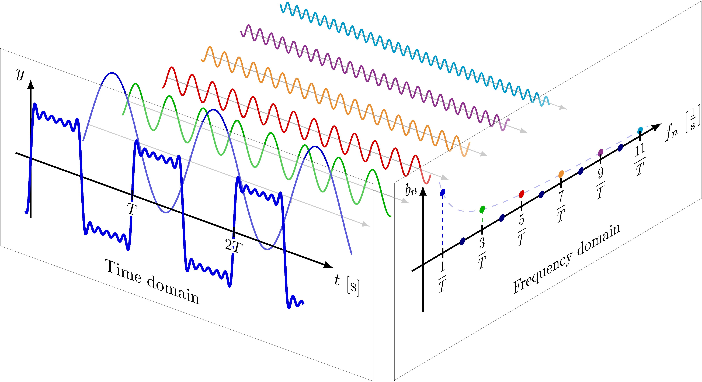
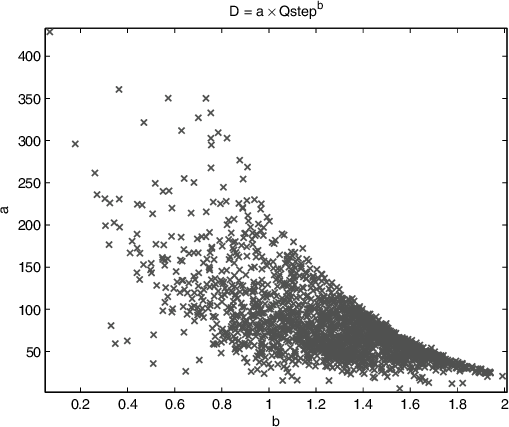
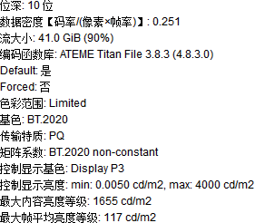

命令行调用参考
命令行参数的说明格式
--参数
<开关 | 整数 A~B | 浮点 A~B | 其它格式，默认值，限制>说明信息，特点注解，推荐这个值，其它情况可设这个值。
- 情况 1：特点如此，推荐这个值
- 情况 2：特点如此，推荐这个值
- 情况 3：特点如此，推荐这个值
ffmpeg 调用 libx265
ffmpeg.exe -i <源> -c:v libx265 -x265-params "<参数A>=<值A>:<参数B>=<值B>" -fps_mode passthrough -c:a copy <输出.mp4>
ffmpeg，avs2yuv 传递参数
ffmpeg.exe -i <源> -an -f yuv4mpegpipe -strict unofficial - | x265.exe --y4m --input - --output <输出.hevc>
ffmpeg.exe -i <源> -an -f rawvideo - | x265.exe --input-res <宽x高> --fps <整/小/分数> -D <位深> --input - --output <输出.hevc>
-f格式，-an关音频，-strict unofficial 解除编码超过 8bit 位深的 y4m 格式，--y4m 对应"YUV for MPEG"，代表一种自带分辨率、帧率、位深等参数的未压缩格式，两个“-”代表 pipe 串流的输出和输入。
avs2yuv.exe <源.avs> -csp <色彩空间> -depth <位深> - | x265.exe --input-res <宽x高> --fps <帧率> --input - --output <输出.hevc>
avs2pipemod.exe <源.avs> -y4mp | x265.exe --y4m --input - --output <输出.hevc>
如果源视频的格式不支持元数据（如 .yuv），或者 ffmpeg 读取不到时，可以手动提供分辨率、帧率、色彩空间以及位深（当然此时直接用视频编码器导入，并手动指定这些信息可能更简单）：
-s <宽x高> -r <帧率> -pix_fmt <色彩空间及位深，如 yuv420p10le>
HDR 转换 SDR
如果源视频使用 HDR 格式编码，而目标格式为 SDR，则可以使用 ffmpeg 的 -vf zscale 滤镜进行缩放。如 ST.2084 PQ 到 Bt.709：
ffmpeg.exe -i <源_HDR10_r2020_ST2084_UHD_24fps_1000nit.mov>
-vf "format=yuv444p12le,
zscale=rin=tv:r=full:tin=smpte2084:min=bt2020nc:pin=bt2020,
zscale=transfer=linear,tonemap=hable:desat=3:peak=1000,
zscale=transfer=bt709:matrix=bt709:primaries=bt709,
format=yuv420p10le"
-color_primaries bt709 -color_trc bt709 -colorspace bt709 -c:v rawvideo -pix_fmt yuv420p10le -strict experimental
<导出无损_yuv444p10le_bt709.yuv>
VapourSynth 传递参数
R.54 - API 3.0:
VSpipe.exe <源.vpy> --y4m - | x265.exe --y4m --input - --output <输出.hevc>
R.55 - API 4.0:
VSpipe.exe <源.vpy> -c y4m - | x265.exe --y4m --input - --output <输出.hevc>
VSpipe.exe <源.vpy> --container y4m - | x265.exe - --y4m --output <输出.hevc>
ffmpeg 调用 libx265 参数
相比直接使用 x265，ffmpeg 通过调用动态链接库的方法做到只用一条命令实现多个视频、音频、字幕和字体，的导入与分别编码，且最后能够封装到一起。同时，这么做可以在不使用 -strict unofficial 命令的情况下直接编码 10bit 或更高位深的视频流。
ffmpeg.exe -y -i <源> -c:v libx265 -profile:v <见：输入输出 Input-output IO> -x265-params "high-tier=1:preset=slow:me=umh:subme=5:merange=48:weightb=1:bframes=5:ref=3" -fps_mode passthrough -c:a copy <输出.mp4/mkv>
ffmpeg 封装流文件
封装字幕与字体时，需要格外注意检查封装文件与流的兼容性，以及目标播放设备与封装文件的兼容性：Comparison of video container formats
ffmpeg.exe -i <视频轨1> -an -c:v copy -i <音轨1> -c:a copy -i <音轨2> -c:a copy -i <字幕轨1> -c:s copy -i <字幕轨2> -c:s copy -i <字体1> -c:t copy <输出.mkv>
ffmpeg 替换音频流
通过 itoffset 实现延迟对齐
ffmpeg.exe -i <封装文件> -i <新音轨> -c:v copy -map 0:v:0 -map 1:a:0 -c:a copy -itsoffset <秒数> <输出封装文件>
ffmpeg .ass 字幕渲染
ffmpeg.exe -i <源> -filter_complex "ass='F\:/字幕.ass'" <输出.mp4>
ffmpeg 缩放滤镜
-sws_flags bicubic/bitexact/gauss/bicublin/lanczos/spline/+full_chroma_int/+full_chroma_inp/+accurate_rnd
ffmpeg.exe -i <源> -s 1280x720 -sws_flags bitexact+full_chroma_int+full_chroma_inp+accurate_rnd <输出.mp4>
ffmpeg thread_queue_size 过小警告
在串流（如上游程序通过管道发给 ffmpeg）用途中，如果 ffmpeg 设置的“每线程使用内存”小于上游发送带宽的峰值，就会面临丢包情况，设置 -thread_queue_size 参数，使 ffmpeg 额外占用一个专门用于读取数据包的线程即可。
ffmpeg.exe <串流方式导入视频> -thread_queue_size <源平均码率 kbps ÷ CPU 占用核心数>
报错导出到文件
指定 2> 相关的 Bash、Terminal、CMD/PowerShell 内置命令即可实现
*.exe <命令> 2>&1 | tee <桌面路径>\报错.txt
*.exe <命令> 2>&1 | tee <桌面路径>\报错.txt
*.exe <命令> 2> <桌面路径>\报错.txt
压制时退出并封装现有内容到文件
Ctrl+C（编码器有一定概率不支持）
视频的压制（节选自 x264 教程）
- 打开编码器
- 用户可以通过多种方法打开编码器：
- 如果编码器内置了如 Lavf 的解封装和解码动态链接库，则编码器可以自动解封装、解码和封装视频文件：
- GUI 软件通过发送 CLI 命令，或者使用像 Bash/CMD 这样的 CLI 工具来打开编码器程序。
- 编码器通常根据输出文件的后缀名自动封装视频文件。
- 如果编码器没有内置解封装解码功能，则通常会使用 ffmpeg 内部的解封装工具和编码器。
- 可以使用 pipe 将上游如 ffmpeg、VapourSynth、avs2yuv 连接到下游如 x264/5 的编码器
- 如果编码器内置了如 Lavf 的解封装和解码动态链接库，则编码器可以自动解封装、解码和封装视频文件：
- 用户可以通过多种方法打开编码器：
- 解封装和解码
- 解封装解码工具将已解压缩的 YUV for MPEG 或 RAW 格式视频流传递给编码器，编码器得到输入信号。
- 如果输入是 RGB24 的 RAW 色彩空间视频流，通常需要使用编码器内置的色彩空间转换功能将其转换为 YUV 格式。
- 如果编码器是录像设备的一部分，则需要根据录像设置将视频流拆分为视频帧。
- 解封装解码工具将已解压缩的 YUV for MPEG 或 RAW 格式视频流传递给编码器，编码器得到输入信号。
- 编码过程
- 前瞻进程：Lookahead 从更小的分辨率预先分析未来几帧的复杂度、运动和场景切换 scenecut 的估计。
- 分帧/帧类型决策：根据前瞻进程的结果和关键帧间隔 keyframe interval 设置关键帧 I 帧与参考帧 P-B 帧。
- 粗分块：
- x264 中粗分到宏块 Macroblock MB
- x265 中粗分到编码树单元 Coding Tree Unit CTU
- 动态搜索：Motion Estimation ME 找到当前帧与参考帧之间的相似区域，并为每个块分配动态向量
- 运动补偿：Motion Compensation MC 对比实际画面与搜索到的向量生成预测块，并补偿精度达¼子像素精度的预测帧对齐偏差
- 细分块：根据 MEMC，进一步细分宏块或编码树单元到最小的 4x4 编码块上。
- 帧间残差编码：对比实际画面与动态搜索与补偿后所得的图像，得到残差，并对残差进行变换和量化，存储到 P-B 帧上，在解码时与 I 帧叠加以得到原始画面。
- 帧内预测：在 I 帧或 P 帧的 I 块上，从前面步骤中生成的候选夹角、DC、趋平中的最佳模式冗余帧内的块，得到预测块
- 帧内残差编码：对比实际画面与帧内预测得到的残差块，进行变换和量化，存储在预测块中，在解码时与预测模式叠加以得到原始画面
- 跳过块编码：跳过帧间或帧内残差编码的块，进行变换和量化。
- 变换：将图像从空间域转换到低频到高频信号分量之间的每个级别，也称为频域。
- 量化：根据用户设置的质量级别，削减高频信号分量，这一步骤对画质和文件大小影响最大。
- 熵编码/文本编码：将变换和量化后的频域分量统计为最小可能的二进制数。
- 生成视频流
- 编码器将生成的数据流逐个 GOP Group of Pictures 打包，并附加如色彩空间、Supplemental Enhancement Information SEI、Video Usability Information/High Dynamic Range VUI/HDR 等元数据，得到视频流。
- 封装视频流
- 用户可以通过多种方法将视频流封装为 .mp4、.mkv、.mov 等格式：
- 如果编码器内置了像 Lavf 的解封装解码动态链接库，编码器可以根据输出命令行的文件后缀名自动完成。
- 如果编码器没有内置解封装解码功能，则通常会使用 ffmpeg 内部的编码器和解封装工具，使编码完成后自动封装。
- 可以使用工具如 ffmpeg、MP4Box，MKVToolNix 等来进行封装。
- 此处包括了封装音频，字幕和字体文件
- 用户可以通过多种方法将视频流封装为 .mp4、.mkv、.mov 等格式：
分块
将帧内的像素组合成大的整体，以更多地冗余单个像素的帧间/帧内信息；同时要根据动静态以及图像边缘的变化，将图像细分为足够小的区域，以精确分配量化的强度。可以说既要大，又要小。
在 High Efficiency Video Coding HEVC 中，帧的下级结构按照分辨率大小分为帧 → 瓦 tile（x265 编码器中暂未实现）/ 条带 slice → 条带分段 slice segment（ss）→ CTU 树单元 Coding Tree Unit → 编码单元 Coding Unit CU。多个 CTU 可以通过瓦 tile 和条带 slice 两种形式构成一帧，后者继承自 x264，代表按左右顺序划分的一排 CTU；前者较新，代表一定宽高范围的一系列 CTU，更适用于根据画面的分布而分配每个分区的码率。

图：Coding Tree Unit 以及其下 Coding Unit 的划分
编码单元 Coding Unit CU 的大小有 64x64，32x32，16x16 和 8x8，代表逻辑上粗略划分的待编码区域。是 CTU 通过动态搜索 ME 与运动补偿 MC 隔离分块得到的初步细分结构。其中的 U/unit 代表 YCbCr 一体的结构。
编码块 Coding Block CB 代表单指编码单元中的 Y，Cb 或 Cr 平面。
每个 CU 通常包含一个或多个预测单元 Prediction unit PU，从而精确地划分出更小的区间。这个区间相对于当前 CU 的大小，所以不用像素值大小表示。具体为默认的 2Nx2N，NxN、启用 rectangle 划分后添加 2NxN，Nx2N、启用不对称划分后添加 2Nx1.5N+2Nx0.5N，0.5Nx2N+1.5Nx2N，2Nx0.5N+2Nx1.5N，1.5Nx2N+0.5Nx2N。亮度 PB 与色度 PB 的划分方法可以是不同的。

图：pu 的 4 种对称 rectangular 和 4 种不对称 asymmetric 划分
变换单元 Transform unit TU 的划分与 CU 而非 PU 同步，实现变换和量化

存取单元 Access unit AU 代表解码端用于启动解码的块，通常由 IDR 帧开始，所以一般叫做 IDR-AU
--ctu
<64/32/16，默认 64>编码树单元最大大小。大则有损压缩效率高，速度慢。一般建议保持默认，除非片有类似 jpeg 边缘损失的老片设32，分辨率特别小的老片设16。
--min-cu-size
<32/16，默认 8>通过限制最小 CU 大小以简化计算。其副作用是导致后续步骤中 PU，TU 的划分更大。按照画面细节程度和编码策略设置。
- 4x4 细分块能够有效地隔离动静态画面——默认
- 8x8 细分块能够有效地隔离动静态画面——16
- 16x16 细分块能够有效地隔离动静态画面——32
- 快速编码——16 或 32
--rect --amp
<开关，默认关，受 limit-modes 限制，amp 需 rect>PU 的对称与不对称细分块，用较大到大量的时间换取画质和压缩率。使用前考虑：
- 画面中有大量面积小于 4x4 细分块的细节——
--rect - 画面中有大量动态细节，包括文本、棱角、纹理、破片等 4x4 细分块也难以隔离的高低频画面——
--amp
变换
傅里叶级数 Fourier Series
波形有正弦波 sinusoidal / sine，余弦波 co-sinusoidal / cosine，直流波 direct current / DC，三角波，方形波，以及各种各样的噪声波等等。两波形相加能够得到中间态，通过修改其中波形的振幅强度还可以微调合成的中间态。因此，理论上只要有足够多的可调节波形，就可以让合成的中间态逼近原始波形，甚至做到完全一样。
除了一条横线以外，波形一般取自余弦 \(\cos(x)\) 或正弦 \(\sin(x)\)。这两者自带周期循环，通过单纯累计 \(\cos(x)\) 可以得到 cosine 的级数：
图：此处使用 cos(πx) 以缩放到 0~2，2~4 为一周期，频率 n 限制范围 1-9 以保证可视化
正弦和余弦函数支持在坐标系中的频率周期缩放，如 \(\cos(πx)\) 可以将其缩放到每周期对齐一般坐标系的 x 轴，如果改成 \(\cos(2πx)\) 则可将其周期缩短一倍，即频率增加一倍。这里我们用 \(\cos(nπx)\) 来与要变换波形的长度 n 对齐。
- 原波形可能会有 y 轴偏移（高 \(h\)），可以从 \(\cos(nπx) + h\) 还原
- 原波形可能会有 x 轴偏移（相位 \(\phi\)），可用 \(\cos(nπx + \phi_n)\) 还原（每个波形的相位可能不一样，所以用下标 n 表示）
- 最后逐个采样点地乘进原始波形，得到变换结果 \(a_n \cos(nπx + \phi_n) + h\)
如果将 \(a_n\) 随频率 \(n\)变化的状态用坐标系表示，就得到了“频域坐标系”：
图：时间域的周期波形映射到频域各个级数（频率 n）的振幅强度 amplitude \(a_n\)。来源 edu.svet.gob.gt
图：逼近方形波的各个级数（频率 n）以及振幅强度。来源 edu.svet.gob.gt
而标准写法为：
\[f(t) = \frac{a_0}{2} + \sum_{n=1}^{\infty} \left( a_n \cos(n\omega t) \right) = \]\[ h + \sum_{n=1}^{\infty} \left( a_n \cos(n \frac{2\pi}{T} t) \right) \]- 其中 \(x\) 换成了 \(t\)，代表时域信号的时间轴
- \(\frac{a_0}{2}\) 代替了高度偏移 \(h\)
- \(\omega = \frac{2\pi}{T}\) 代表波形从\(\pi\)周期缩放到整数周期，接着缩放到输入信号长度中的基本宽度 \(\frac{1}{T}\)
- 由于 \(\cos(\omega t + \phi_n) = \cos(\omega t) \cdot \cos(\phi_n)\)，所以拆分出 \(\cos(\phi_n)\)，乘进 \(a_n\) 里：\(a_n = a_n \cdot \cos(\phi_n)\)，而简化成了 \(a_n\)
当然，理解这个式子背后的理论就足够了，说不定式子非得这样写，原因到底不过是为了好看...
均方根 Root Mean Square（RMS）
统计中常用的一种数据量化，用于表示一组数据平均值的平方根。对于一个包含 N 个值的数据集\( \{ x_1, x_2, \ldots, x_N \} \)
\[ \text{RMS} = \sqrt{\frac{1}{N} \sum_{i=1}{N} x_i^2} \]具体到 DCT 变换，对于 N×N 块 \( f(x,y) \) 的均方根以表示为：
\[ \text{RMS}_{f(x,y)} = \sqrt{\frac{1}{N^2}\sum_{x=0}^{N-1} \sum_{y=0}^{N-1} f(x, y)^2} \]DCT 变换后，DCT 系子 \( T(u,v) \)的均方根为：
\[ \text{RMS}_{\text{DCT}} = \sqrt{\sum_{u=0}{N-1} \sum_{v=0}^{N-1} C(u, v)^2} \]归一化/基本单位化 Normalize
将数据缩放到基本单位大小，以便计算和对比的处理。\( \alpha(u) \)和 \( \alpha(v) \) 两个缩放值来对齐，使得
而在 JPEG 中：
一维傅里叶变换 1D Fourier Transform
一种理解方法为：将信号分段或整体视为一个周期，再设定一条从最长周期（起伏很慢的周期线，如 \(\cos(0.001x)\)）开始的函数，穷举所有的相位，再穷举所有的振幅，而后记录匹配程度；再缩短一点周期，再穷举所有的相位，...，如此往复直到所有频率、相位、振幅的匹配程度被记录下来。
逆变换时，根据每个周期频率所记录的的相位和振幅生成这些波形，再加到一起即可转换回原始信号。计算过程中可能存在信号反相情况，因此还会绝对值的操作。


图：二维傅里叶变换的特性，背景特性以及可编辑性
--limit-tu
<整数 0~4 默认关，需 tu-intra/inter-depth 大于 1>提前退出 tu 分块，以量化/残差编码质量为代价提速。tu 大则易出现量化涂抹涂抹，不利于暂停画质。
- 1 一般，画质编码，取分裂/跳过中花费最小的
- 2 以同 ctu 内的首个 tu 分裂次数为上限
- 3 快速编码取帧内帧间附近 tu 分裂平均次数为上限
- 4 不推荐，将 3 作为未来 tu 的分裂上限，相比 0+20% 速度
--rdpenalty
<整数 0~2，默认关，需 tu-intra-depth 大于 1>与 limit-tu 相反，强制 tu 分块细化以增加算力损耗并降低量化涂抹。可理解为 tu 分块的下限，例如高 limit-tu，高 crf 时设 2，避免 32x32tu 量化效果太强画面糊掉。
- 1 提高率失真代价而减少 32x32tu 出现概率
- 2 强制 32x32tu 分块
- 32x32 的帧内 cu 需 tu-intra-depth 2
- 64x64 帧内 cu 需 tu-intra-depth 3
--tu-intra-depth --tu-inter-depth
<整数 1~4，默认 1，配合 limit-tu>空间域 tu 分裂次数上限，默认只在 cu 基础上分裂一次。决定量化质量所以建议开高，建议一般情况设 2，保画质设 3~4。
--max-tu-size
<32/16/8/4，默认 32>大 tu 使压缩高而慢，以及瑕疵检测能力越差。码率换时间加画质。编码已有边缘损失的老片可搭配ctu 32与max-tu-size 16
动态搜索
用于在连续帧间进行运动估计。这个过程涉及逐个像素块在相邻帧之间寻找最小失真朝向/最小失真方向 Direction of minimal distortion DMD，从而在每帧之间都生成一张向量表。如果这个过程缺失或不够理想，参考帧与分块的建立就可能会出现问题，从而导致潜在的压缩率损失或画质下降。
简化模型下，动态搜索得到帧间向量表，帧间向量表加上上帧的画面得到预测帧，原始帧减去预测帧得到残差帧，残差帧储存为参考帧，得到帧间结构。

图：传统的 Jain & Jain 十字搜索。

图：大小菱搜索。x264/5 中，六边形搜索 me hex 将 LDSP 的上下左右斜 8 个外点减到 6 个，SDSP 的细化规则不变。

图：umh 搜索。
--analyze-src-pics
<开关，默认关，推荐关>动态搜索不再等待前瞻进程、分帧/帧类型决策和粗分块（包括 WPP）后的结果，而是直接搜索源帧像素。这样可以将动态搜索在独立线程上运行，提高并行效率；由于编码器最终编码的就是处理后的帧，而不是原帧，因此使用该选项反而会导致动态搜索准确度下降，降低画质。见 doom9 说明帖。
--me
<hex/umh/star/esa/full，推荐 umh>搜索算法，umh 平衡，star 四角星搜索之后收益递减，sea 是优化过的 x264 esa 穷举，但收益递减仍大。umh 和 star 通过多种分辨率大小的查找范围，减轻了动态噪点对传统搜索算法的干扰
--merange
<整数，推荐 4 的倍数，需 me>完全取决于 ME 算法和分辨率，过大会因「找不到更好，找到也是错」而损失画质和压缩。
- 1920x1080 下推荐48左右
- 3840x2160 下推荐52左右
- me hex 下设16
- me umh-star 设≥32
--no-temporal-mvp
<开关>关 P-B 条带的动态搜索，除直播外不推荐。
--hme-search
<hex/umh/star/esa/full，关 me>原画做三种分辨率，分别查找搜索动态信息，能够更好地消除动态噪点所导致的假动态向量。
--hme-range
<三整数，需 hme-search，推荐默认16,32,48>对应 1/16，¼和全分辨率三画面。
绝对变换差和 SATD
Sum of absolute transformed difference 为两个变换块间做差，取和，取绝对值的步骤：
- 首先计算两个块 B 的插值，记做残差块 D：\(\text{D}(x,y) = B(x,y) - B\prime(x,y)\)
- 然后通过如 DCT 变换，得到变换残差块：\(T(D)\)
- 最后，变换残差块的每个像素取绝对值和：\(\text{SATD}(B,B\prime) = \sum_{x=0}^{n-1}{\sum_{y=0}^{n-1}}| T(D(x,y)) |\)
注：为了简化所以写作 \(T(D(x,y))\)，实际这样相当于每加一个像素值就要变换一遍
子像素运动补偿
动态预测的精度比起原画还差一点（最高 1px）导致了预测帧相比原画会欠缺大量的纹理细节；在此之上还常遭到动态噪点的干扰劫持。动态补偿 Motion Compensation MC 通过对比原画与预测块得到残差，并根据残差的分布动态向量的精度到¼子像素，使“精加工预测块”的画面残差尽可能地缩小，得到足够准确的预测帧。
至于对抗动态噪点，大体上是允许真正移动的物件（所涵盖的分块）有运动向量，拦截噪点在静止画面上的孤立运动向量，即「允动之移，防静所变」解决。
- 此处省略以上帧画面与帧间向量表中的动态向量的和，得到一系列粗加工预测块的步骤
- 使用有限冲激响应插值滤镜 FIR filter 放大画面以便后面对齐
- 将“粗加工预测块”与源视频所对应的画面使用 SATD 做差，得到当前的误差程度
- 当前向量的 x，y 分量分别加减 ½，¼ 像素（插值放大的画面中是整数像素），即分别让这些块对比原画跑一遍 SATD：
- \(B\prime(x+½,y),B\prime(x,y+½),B\prime(x+½,y+½),B\prime(x+¼,y),B\prime(x,y+¼),B\prime(x+¼,y+¼),B\prime(x+¼,y+½),B\prime(x+½,y+¼)\)
- 选出 SATD 误差值最小的块——中的 x,y 分量，纠正帧间向量表的动态矢量，完成补偿
注：在参数值强度给高后，上述的对比步骤改成用 me hex 之类的动态搜索算法来找对齐
| 编码器 | 平面 - 块类型 | 范围精度 | 插值方法 |
|---|---|---|---|
| x264 官方 | 亮度 Y | ½ 像素（hpel） | 6 tap FIR |
| x264 官方 | 亮度 Y | ¼ 像素（qpel） | 双线性插值（Bi-lerp） |
| x264 官方 | 色度 C | hpel+qpel | 上下左右加权平均 |
| x265 官方 | 亮度 Y | hpel+qpel | 上下左右加权平均 |
| x265 官方 | 亮度 Y | ¼像素（qpel） | 两种 7tap FIR |
| x265 官方 | 色度 C | hpel+qpel | 4tap FIR |
表：x264/5 的 h~qpel 插值计算（实现了浮点→整数变量的程序优化）


图：此“子像素”特指插值出的 half-pixel(hpel)½像素，及 quarter-pixel(qpel)¼像素。

图：Y 平面 FIR 插值和 subme 并行，调用 8²或 16²块的横/纵向参考源。若 subme 所得动态的：
- 向量横分量==0: [d][n] 分别用 7tapα或β采样整像素 [A]
- 向量横分量!=0: [f][q] 分别用 7tapα或β采样子像素 [b]
- 向量纵分量==0: [a][c] 分别用 7tapα或β采样整像素 [A]
- 向量纵分量!=0: [i][k] 用 8tap 分别采样子像素 [a][c]
--subme
<整数范围 1~7，默认 2>根据源帧率借下表判断。注：x264 的 rdo 选项和 subme 并用，所以与 x265 不通用；SATD 算法见 x264 教程。
| 范围 - 开 RDO | 推荐 | hpel 迭代 | hpel 搜索 | qpel 迭代 | qpel 搜索 | 统计法 |
|---|---|---|---|---|---|---|
| 30fps | 3 | 二次 | 四方向 | 一次 | 四方向 | SATD |
| 48fps | 4 | 二次 | 四方向 | 二次 | 四方向 | SATD |
| 60fps | 5 | 一次 | 八方向 | 一次 | 八方向 | SATD |
| 90fps | 6 | 二次 | 八方向 | 一次 | 八方向 | SATD |
| ≥144fps | 7 | 二次 | 八方向 | 二次 | 八方向 | SATD |
量化值加权预测 Weighted Prediction
解决画面淡入淡出（fade）过程中，部分 PU（预测单元，待编码的 Y，Cb，Cr 块）因误参考，导致量化值不统一或参考源指向错误，导致亮度变化不一的块失真问题；分为 P-B 条带用的显加权，和 B 条带用的隐加权。
- 显 Explicit：原画和编码过的参考帧做差，差距越小权重越高
- 隐 Implicit：用参考帧距离做加权平均插值，距离越近权重越高

--weightb
<开关，默认关>启用 B 条带的隐加权预测。注意光线变化和淡入淡出在公开课，电脑录屏，低成本/旧动漫等片源中几乎不存在，这种情况下打开只会浪费性能。
帧间 - 时域架网搜索
让短波像拉链一样划过一维信号，短波所到的时间域与源信号匹配（波形重合）的程度会变化，而变化本身记为时间频域信息。支持更换波形以提取特征（如特征采样式音频降噪滤镜）。解决了傅里叶变换只有空间频域，无法描述信号随时间变化过程的原生缺陷，缺点是分辨率低。详见科普视频。一般用于检测特征片段，如将小波本身塑性为需要的特征，然后划过源波形，得到这些特征的时间域分布和强度变化。

图：用蓝色小波划过红色信号的变换例子
类似于 crf/abr 模式推演量化值中以 a-b 帧之差做复杂度累计。此处是用以预测 b-c 帧的差，而预测对的更新到低频 L 带，差错的更新到（不再参与下轮预测）的高频 H 带，得 0-1-2，2-3-4，4-5-6 等（prediction）帧以及其 H 带（update）构成第 0 层
继续在 L1→Ln 的 1 层向右迭代，分离出所有的 L，H 带，如此实现迭代 n 次即分离 2n 帧动静态，以及所有的预测与补偿，故不像传统动态搜索一样受缩放性 scalability（分辨率 vs 搜索范围）限制。是 Scalable Video Codec - SVC 编码的核心算法之一。
迭代后的高低频用 LL1 LL2 LH1 LH2 表示低到高频的顺序，字母位数代表迭代次数。

利用正态分布函数面积不变的特性，通过设定偏差程度 σ 决定正态分布钟型线的梯度：σ 大则钟扁——滤镜中心分到的权重/面积越被更多分到权/面积的旁像素冲淡模糊掉，设计行业常用。见维基百科和Desmos 互动例。2D 高斯模糊写作： $${\displaystyle G(x,y)={\frac {1}{2\pi \sigma ^{2}}}e^{-{\frac {x^{2}+y^{2}}{2\sigma ^{2}}}}}$$
和卷积滤镜一样用 n×n 的滤镜格子逐像素扫图，区别在于滤镜中心会被替换为旁像素的中值。如此一来在扫描窗口任意两端几乎一致的像素值会被识别为线段或边缘，中间的像素值会被同化，而平面上的噪点/颗粒就会被抹除，生成仅有平/斜面和完整线条边缘的“模糊”结果。


将中值滤镜输出作为（2D）高斯模糊的权重蒙版（通过矩阵点除实现动态干涉滤镜强度）；因此平面/斜面/线条本身会决定高斯模糊正态分布钟在对应位置被保留/干涉/隔断的程度

--mcstf
<开关，默认关，仅支持单线程，有残影失真，推荐关>时域动态补偿滤镜 mctf 搭配双阈滤镜的自动降噪，理论上提高细节保真。
帧间动态向量先预测/溯块向量预搜索
“动态搜索”与“动态预测”的全称分别是 Motion Estimation 和 Motion Prediction，两者不同但都可译作“预测”，“估计”（其实很容易混淆，不能怪翻译）。因此为了简化，此处将 Prediction 译作预搜索/先预测/预估计（代表 Estimation 之前的 Estimation），Estimation 译作搜索/预测/估计。
- Estimator 用现有数据推导参悟出最可能的值（Parameter）。例如在有限数据下对人口平均年龄、身高的预测
- Predictor 用现有数据预计未知——任何可能的数，包括对未来天气、经济、人口的预测
预搜索有缩小搜索/预测/估计范围的性能优化作用，且比单用搜索本身更适合多线程分工（尽管实际可能会被进程跨核心，跨 CCD 等延迟限制）。x264 中使用 --direct spatial / temporal / auto 指定从帧内/帧间/同时作为动态/帧内预测的起点。x265 中则引入了专门的算法：高级动态向量预搜索和并合模式对比相邻编码块的搜索结果，缩小了动态搜索/预测/估计算法的计算范围（cu 帧内/帧间朝向以及大小）。
高级动态向量预搜索 AMVP
全称 Advanced Motion Vector Prediction。
- 在帧内看当前 PU（预测单元，待编码的 Y，Cb，Cr 块）左下的邻 PU，优先匹配向量往帧内指的邻 PU
- 参考向量指向参考帧范围内（
--ref）的临帧 PU，包括尝试等比缩放到大小相异邻 PU 的匹配方法 - 若以上步骤没找到参选向量，就把同样的步骤于当前 PU 右上角进行一次
- 若应了如早批 PU 刚开始算，找不到参选向量的情况下就直接从时域搜索：
- 照帧间参考图像变化的内容差异做缩放调整，从右下角的相邻 PU 找参选
- 若仍匹配不到有效向量，就查找当前 PU 中心位置的邻帧同位 PU
- 最后凑不齐两个参选向量则留空（代入 vector = 0,0）
并合搜索模式 Merge Mode
然后用相对简单含糊算法接手剩余块的向量：从帧间，帧内凑五个参选块 candidate，两个备选，少服从多地并和动态向量。（该模式会跳过 PU 的边缘及当前向量以提速）

--max-merge
<整数 0~5，默认 2>重设 merge mode 被选参考块的数量，时间换质量。建议高压编码设4，其它可设2，3。
--early-skip
<开关，默认关>先查 2nx2n merge 被选块，找不到就跳过 AMVP 以提速。
前瞻进程 Lookahead
最先启动，设立关键帧和参考帧，决定了 GOP 划分的初始编码步骤。决定了后续所有步骤的大纲。过程见x264 教程网页版
--scenecut
<整数，不推荐用>Lookahead 中两帧差距达到该参数值则触发转场。
--hist-scenecut
<开关，默认关，会关 scenecut，10 与 12bit 源可能会导致崩溃，推荐 8bit 下用>亮度平面边缘 + 颜色直方图 SAD 阈值触发转场。x265 v3.5+69 后编码彩色视频，尤其HDR 源中超越 scenecut 精度~20%，降低了正误判（设 I 帧，closed-gop 下帧间冗余效益降低）和负误判（不设 I 帧，分为多个带 I 块的 P 帧预测效益降低），因此除黑白视频外推荐。缺点是超过 8bit 后不稳定，且理论上不应对画质/压缩率有太大影响
注：hist-threshold 参数于 x265 v3.5+69 被删。
--rc-lookahead
<帧数量，范围 1~250，推荐 keyint÷2>指定 cutree 的检索帧数，通常设在帧率的 2.5~3 倍。高则占用内存增加延迟，低则降低压缩率和平均画质。
注：mbtree/cutree 会自动选择 --rc-lookahead 和 \( \max\left( \text{keyint}, \max\left( \text{vbv-maxrate}, \text{bitrate}\right)\div\text{vbv-bufsize} \times \text{fps} \right) \) 中最小的值作为检索帧数
--no-cutree
<开关>关闭少见 CTU 量化增强偏移。可能只有近无损，--crf 小于 16 才用的到。
P/B 帧推演 - Viterbi 最短路径算法
--b-adapt
<整数 0~2，推荐2>0停用，1快速算法，因当今设备算力够高所以一律2。
--bframe-bias
<整数 -90~100，推荐默认>设立 B 帧判定偏移，增大的同时搭配低 pbratio 可增加 B 帧数量，用负值搭配高 pbratio 可以减少 B 帧数量。
网络抽象层单元——参数集
Network abstraction layer unit 中含解码配置 profile，level 的数据包。x264 中的视频帧数即 sps->vui.i_num_units_in_tick 或 sps->vui.i_time_scale÷2 所得（÷1 则为分行交错视频）
- 视频参数集 Video parameter set
- 序列参数集 Sequence parameter set-——分枝 - 负责播放时间戳，显加权与其它特定解码要求
- 图参数集 Picture parameter set————分枝 - 负责解码信息
- 条带段 Slice segment—————————分枝 - 负责防止 ctu 中的错误传播到整个条带，ctu 以上最小的单位
--opt-qp-pps --opt-ref-list-length-pps
<开关，默认关，已知兼容性问题>据上个 GOP 改动当前 PPS 中默认的 qp/ref 参数值，从而整体上优化视频数据结构。尽管符合 HEVC 标准，但部分解码端，包括视频网站都不这么想
注：兼容性问题为应该用 hev1 而非 hvc1 封装进 ISO-BMFF。
--repeat-headers
<开关，默认关>在流未封装的情况下提供 SPS，PPS 等信息，正常播放 HEVC 源码
注：封装文件的科普见 x264 教程。
HLS 与 Chunked Encoding 串流
HTTP 数据块编码协议 Chunked Encoding（1997 年）
HTTP/1.1 的一部分。数据块编码允许服务器分段传输视频流的数据块，实现视频的直播、实时聊天等场合。理论上所有平台都支持该协议。
HTTP 直播协议 HTTP Live Streaming HLS（2009 年）
适用于视频直播和点播，可以根据网络条件和设备性能动态调整视频质量。HLS 还提供了媒体播放列表（M3U8）和分段（TS）的机制，使得它更适合跨互联网传输视频。主流的浏览器、视频播放器和移动设备都兼容 HLS。
总的来说，HTTP Live Streaming（HLS）和 Chunked Encoding 都是 HTTP 协议的一部分。Chunked Encoding 优点在于容易实现以及冷门设备更可能支持，但是在专门的流媒体应用中不如 HTTP Live Streaming（HLS）的功能强大。
--chunk-start --chunk-end
<开关，需 no-open-gop>start 跨 GOP 打包网络数据包，end 将数据包结尾标注分割。
注：由于数据包接收顺序随机，所以只可参考 chunk 数据包之前，而不可参考 chunk 数据包之后的内容，跟 http 串流的数据包编码协议有关
关键帧
刷新解码帧 Instant decoder refresh IDR
- 自身储存完整图片，但同时还负责 GOP 间划界分段，播完令解码器清理前 GOP 缓存的大写 I 帧
- 清缓存是为了防止参考/内存错误传播，错误可能源自硬件/软件/网络/干扰等
随机访问点 Random access point RAP
- “访问”代表播出画面前获取数据的过程
- “任意”代表拖进度条，打开直播，使进度条上任意一点都要正常解码的目的，增加码率提升体验
CRA/DRA净/脏任意访问 clean/dirty random access
- Open-gop 状态下指定包括 GOP 间划界，GOP 内帧间参考，自身储存完整图片的 i 帧
- 附近的 rasl/radl 帧与之相对应
- 「脏」指一组含 i 块的 P 帧，需要全部解码才能重建出 i 帧。压缩更高但相比 i 帧的解码更容易糊（脏）
断链访问帧 Broken link access BLA
- open-gop 间划界，访问不相关/不相连 GOP 的特殊 CRA 帧。用于不暂停播放的分辨率切换
--no-open-gop
<开关，默认关，建议开>不用 cra/bla，增加码率增加兼容性，适合长 GOP 策略。
--keyint
<整数，默认 25>判断新发现的转场距上个 IDR 帧的距离是否短于此值。有两种设定逻辑，而它们给出的画质都一样：
- 设 5 或更高，省了设立一些 IDR 帧拖慢速度。快速编码/直播环境直接设=keyint
- 设 1 来增加 IDR 帧的数量，一帧被判转场本来就意味着前后溯块价值不高。而单/双向参考（P/B）帧内可以放置 I 宏块，x264/5 倾向插 P/B 帧。好处是进度条落点在激烈的动作场面更密集
--fades
<开关，默认关>找流中的虚实渐变 fade-in，给小到帧间条带，大到整个帧间范围改用 I 条带，并根据渐变后最亮的帧重设码率控制历史记录，解决转场致模糊的问题
注：与 weightb 殊路同归但效果更强，增加码率更多。
参考帧
RASL 任访略前导，RADL 任仿解前导 random access skipping/decoding lead
- 打开直播或用户拖动进度条落在 CRA 附近，找不到 I 帧时指定应该解码 decode 还是略过 skip 的标签 P 帧
- 启用后，部分引用这些标签 P 帧的 IDR 帧会改变帧类型，以提示这些标签帧位于其之前，而这种 GOP 的解码会与传统 GOP 有一些区别，导致后续剪辑工具链中的兼容性问题
--ref
<整数 1~16>多参考帧前后帧数半径，一图流设1。要在能溯全所有块的情况下降低参考面积，所以一般设3就不管了。
--radl
<整数默认 0，小于连续 B 帧，推荐 2~3>原理以及兼容性问题见上。
--ipratio --pbratio
<浮点，默认 1.4 1.3>P 帧比 IDR/I，及 B/b 帧相比 P 帧的量化值递增。B 帧双向参考能从更多帧中找到参考源，因此量化强度理应最高：
- 真人录像片源中保持默认
- 动漫片源中连续长 B 帧出现几率增多，有时会找不到合适的参考源导致画质损失，用1.2或更小分配一定码率
- 可据比例换算帧类型的 qp，如I-qp17，P-qp20，B-qp22即--qp/crf 17 --ipratio 1.1765 --pbratio 1.1
--bframes
<整数 0~16>最多可连续插入的 B 帧数量：
- 一般录像/录屏快速，以及视频剪辑素材设3~6以防止录制和剪辑的解码算力要求过高
- 电影片源快速设8左右
- 低成本动画片源，或播放设备配置或硬解兼容高的话可设在13左右
注：bframes 大于 8，同时 keyint 大于 250 会大增内存占用，但也取决于视频分辨率
帧内预测/单图压缩
在帧间编码完成，重复内容较多的帧变成 P-B 参考帧后，这些 P/B 帧所冗余的数据都会指向 I 帧/I 块上。这些 I 帧帧内也有像大平面，大斜面之类的空间可供冗余。冗余分为补偿参考源，平滑（3-tap/ss），和编码预测块 PB 三步。参考源由预测块的左，上两排像素构成。
- 补偿解决参考源（因为编码顺序等原因而）缺失，无法判断 PB 与 CB 参考关系的问题
- 平滑预处理据参考源自身像素值的分布特征选择 3-tap FIR 或强力平滑滤镜，卷积插值出「纯预测 PU」
- 编码即根据参考源像素值分布的特征和编码块 CB 像素值的相性选用趋平/夹角/DC 三种方案之一编码预测块 PB
以下图预测块 C 为例：编码块 B 处缺少参考源就用编码块 A 的最右侧存在参考源做副本。编码块 D 补充 A-B 两块参考源的逻辑同上；若 EDAB 四个编码块都没有参考源，就用编码块 F 的顶部参考源替代；若 EDABF 五个编码块都没有参考源，则给所有参考源填像素中值。
图：补充参考源的检查顺序。

强力平滑滤镜的启用条件
- 预测块 C 的大小小于 32x32
- 底 - 中 - 顶，及左 - 中 - 右三个纵/横向参考源两两差之和小于视频位深，如 8bit 下为 8
- 非 DC，非平行（夹角 10），非垂直（夹角 26）的帧内预测模式
图：强力平滑滤镜的启用条件。

强力平滑滤镜 Strong intra smoothing
- 从横 - 纵向两个参考点直接线性插值 lerp 出所有参考点，以及所对应的预测像素 p
- 缓解了色带问题
图：强力平滑滤镜。

3-tap 有限冲击响应 Finite Impulse Reponse 滤镜
用横向\(t(x)\)与纵向\(l(y)\)各 3 像素加权平均得预测像素 p，按卷积顺序轮询得到 PU
图：3tap FIR 滤镜。
预处理后，用趋平，夹角，或 DC 模式初步编码 PB 到 CB。

趋平模式 Planar
用双线性插值 Bi-lerp，让左，上过渡为右，下平面。由 底β × 高α + 底α × 高β = h × 底γ 的关系从\(l(y)\)得过渡线\(h\)，再做\(t(x)\)得过渡线\(v\)，而所有过渡线连起来，每个预测的像素点取平均就完成了趋平插值。
图：得到一个平均预测像素 p(x,y) 的过程。

夹角模式 Direct（35 种）
将渐变（斜面）预测块 PB 无损压缩为编码块 CB 中全部画面与参考源共角的夹角\(\theta\)拓补结构。通过穷举所有\(p(x,y)\)的夹角以尝试对齐上方横向参考源\(t(x)\)，或左侧纵向参考源\(l(y)\)中差异最小的点\(t(x\pm n)\)或纵向的\(l(y\pm n)\)构成直角三角。用三角函数\(\frac{opp}{adj} = \tan\theta\)得预测像素\(p\)的夹角\(\theta\)


图：大体的精确夹角测算。见Elecard 参考书
--constrained-intra
<开关，默认关>缺少生成参考点的 CB 时用帧内块或默认值，不用帧间块生成参考点。降低参考错误传播距离，降低压缩率和速度，增加数据损坏的恢复概率。
--fast-intra
<开关，rd 大于 4 时关，推荐开>夹角模式优化。先查夹角模式 2,10,18,26,34，再提高精度到 5，15，21，31，再用最高精度。提高速度且略微增加参考错误，关闭相对更加浪费算力。
--b-intra
<开关，rd 大于 4 时关，推荐开>B 条带同样进行帧内预测。关闭可以提速，但相对浪费压缩率。
--no-strong-intra-smoothing
<开关，不推荐>强力平滑滤镜平滑的是参考点而非 pu，还能去色带，所以不推荐关。触发条件与原理见上说明。
率控制
量化
由 QP 值，分块大小，位深等条件所指定的矩阵除法表。通过点除实现的频域强度分解。
矩阵 Matrix
一串于特定位置换行的数字，用括号括起来得到。矩阵和矩阵之间可以根据情况选一种算法实现加减乘，和一种除法
点乘/内积 Dot Product
两个矩阵之间，位置相对应的数相乘，得到新的矩阵。如果两个矩阵大小不一，则需要设定其它规则才能计算。
矩阵除法
没有乘法的各种花样，由两个大小一致的矩阵一对一地点除（和约分）实现。如 JPEG 8x8 亮度变换块的量化：
矩阵间的行列式叉乘 Determinant cross product
通过一种算法（此处为行列式）将矩阵坍缩为一个数字（标量）得到。
矩阵间的外积 - 克罗内克积 Outer product
将乘数矩阵本身乘进被乘数矩阵中的每一个值得到：
矩阵间的哈达玛积 Haramad product
两个大小相同矩阵下的一种常用的自定义点乘/内积算法。
x264 中，变换与量化会通过哈达玛积合并为一个矩阵表格，如 4x4 亮度块下为：
得到 qp 为 0，1，2，4，5 下的 4x4 块变换量化合并矩阵分别为：
算出量化值
人眼对明暗变化与画面细节程度的感知呈对数 ㏒ 状，分别奠定了显示器的伽马曲线映射，以及量化值 qp（x 轴）到强度 qScale（y 轴）的强度映射。图：量化值 qp 到 qScale 的映射，见desmos 互动例；伽马矫正的科普见x264 教程，ArtLEDs 科普。
由于当前帧此时还未编码（码率未知），故寻已编码前帧的量化失真程度（越高则后帧理应越复杂），做推演复杂度/模糊复杂度。CRF 越高则除进推演复杂度的分母越大/ABR 越低则分子越小，得到的推演复杂度越低，推演出的量化值就越高。
| cplxSum$$\frac{cplxSum\lbrack L_{-1}\rbrack}{2} + SATD\lbrack L_{-1}\rbrack$$ | 重复将当前帧 \(L\) 与旧帧 \(L_{-1}\) 做帧间差（SATD）并与已有的总复杂度累计到一起，（累计复杂度通过除以二来降低权重），成为新的累计复杂度 \(cplxSum\lbrack L_{-1}\rbrack\)，扫完 GOP 内所有帧后完成 |
|---|---|
| cplxCount$$\frac{cplxSum\lbrack L_{-1}\rbrack}{2} + 1$$ | 初始为零，用于逐帧加权 cplxBlur 的帧数计。÷2 与 cplxSum 同步。加权逻辑时越往后参考冗余理应越多的规律 |
| cplxBlur$$\frac{cplxSum}{cplxCount}$$ | 模糊复杂度。据帧所处于 GOP 中的先后位置 cplxCount 为权重，推演加权出新的帧间差复杂度（SATD）。差异近似 100% 则当前帧复杂度推高（复杂度呈涨势）可扭转 cplxCount 越高，分母越大，分配质量越低，量化值越高的跌势 |
| qScale$$0.85 \times 2^{\frac{qp-12}{6}}$$ | GOP 内累计的直线化 qp，或 rdoq 的拉格朗日值 λ。已编码帧的 qp 转 qScale，便于其它参数修改更新 |
| ABR_rate_factor$$\frac{target\_rate\_window}{\text{cplxSum}}$$ | GOP 初始值，ABR 下的 qScale（rdoqλ）转 qp |
| ABR_qScaleNew$$\frac{qscale \times \text{overflow}}{ABR\_rate\_factor}$$ | 据 ABR 控制更新一遍 qScale（rdoqλ） |
| cplxBase$$ctu\_count \times (bframe?120:80)$$ | 常数/恒定值。CRF 模式默认的复杂度。若用 B 帧编码则 CTU 或宏块数量×120，否则×80 |
| CRF_rate_factor$$\frac{cplxBase^{1-qcomp}}{qScale \times (crf + cutree + bframe\_offset)}$$ | GOP 内累计，经 cutree，B 帧偏移乘进 qScale 后得 1-qcomp 与 CRF_qScale 对齐（仅 cplxBase，cplxBlur 运算） |
| CRF_qScaleNew$$\frac{cplxBlur^{1-qcomp}}{CRF\_rate\_factor}$$ | 据 crf_rate_factor 更新当前帧的 qScale（rdoqλ） |
| qp$$6\log_{2}{\frac{qscale\_ new}{0.85} + 12}$$ | qScale（rdoqλ）经调整后得到当前帧的量化值 qp。各 qp 对应一套 DCT 变换量化矩阵。qp→qStep 见x264 教程 |
因此，帧内画面复杂则 qp 低，简则高；同时据用户设定的（对数）强度的动态变化。这种质量判断只有两帧而不宏观，所以引出了各种各样的优化步骤，如 mb/cutree，rdoq 等。
上层，下层与双层模式
上层 - 质量呼应码率 CRF 模式
全称 Constant Rate Factor。压制三角形下，距离妥协中心点最近的模式。因此也是压制最常用的模式。
--crf
<浮点范围 0~51，默认 23>据 cplxBlur，cutree，B 帧偏移给每帧分配各自 qp 的固定目标质量模式，或简称质量呼应码率模式，统称 crf。素材级画质设在 16~18，收藏~高压画质设在 19~20.5，YouTube 是 23。由于动画和录像的内容差距，动画比录像要给低一点
上层 - 平均码率 ABR 模式
全称 Average Bitrate。编码器自行判断量化程度，尝试压缩到用户定义的平均码率 average bitrate 上，速度最快
--bitrate
<整数 kbps，禁用 CRF>平均码率模式。保持一个较低的量化，超出平均码率后增强量化。直播推流用的“码率选项”就是在设置这个参数
双层 - 恒定量化值 CQP 模式
全称 Constant Quantizer Parameter
--qp
<整数 0~69，禁用 CRF/ABR/模式决策/率失真优化>设定全局量化强度。除非有既定目的，否则不建议使用。如果要手动指定特定范围的帧类型和量化值，则应使用 SBRC 下层模式
下层 - FTQP 半自动模式
手动通过文件制定一部分帧的帧类型和量化值，实现全部手动或半手动指定。
--qpfile
<路径到文件>手动指定帧类型和 qp 值 closed-gop 下 K 帧的 frame type qp 下层模式。qpfile 文件内的格式为"帧号 帧类型 QP"
- 帧类型可以选 [I,i,K,P,B,b]
- 大写 B 代表 B-Pyramid
- 大写 I 代表 IDR 帧
- K 在
--no-open-gop时代表 IDR 帧 - K 在
--open-gop时代表 i 帧 - x265 中，QP 值可以不填，代表使用上层率控制模式
- x264 中，QP 值填 -1 代表使用上层率控制模式
qpfile.txt 例：
- 0 I 18
- 1 P 20
- 2 B 22
- 3 i 21
- 4 b 28
下层 - VBR，CBR 模式
带宽是有限资源。一旦网络、硬盘、内存、PCIE 等等带宽慢于当前视频码率，播放就会卡顿。因此在播放流媒体前，播放器会设置一段内存缓冲区，利用了传输速度有时会快于当前视频码率的随机条件，预加载一些数据以求播放不卡顿。此时问题变成了“缸里一端加水、另一端放水，注水量变化但缸里一直有水，求缸的大小”。如此，只要平均传输带宽大于 GOP 平均码率则播放流畅。有的大型 3D 游戏中没有加载缓冲区，导致无论电脑内存多大，只要玩家移动到触发地图加载的区域后，游戏才会开始读盘而突然卡顿。
基于缓冲区的量化控制 VBV 全称 Video Buffer Verifier：
- 保证
rc-lookahead范围内，用户通过vbv-bufsize vbv-maxrate指定网络/设备元器件带宽所能及的缓冲速度是否大于等于码率流量 - 码率超过缓冲区域则视频必然会卡顿，所以加大视频中「码率大于带宽处」的压缩强度。因此 VBV 对画质的破坏较大
- 与 CRF 上层模式一并使用时叫可变码率 Variable BitRate（VBR），或 Capped-CRF 模式
- 与 ABR 上层模式一并使用时叫固定码率 Constant BitRate（CBR），或 Capped-ABR 模式
--vbv-bufsize
<整数 kbps，默认关=0，小于 maxrate>编码器解出原画后，最多可占的缓存每秒。bufsize÷maxrate=播放时解码出每 gop 原画帧数的缓冲用时（秒）。值的大小相对于编完 GOP 平均大小。编码器用到是因为模式决策要解码出每个压缩步骤中的内容与原画作对比用。
--vbv-maxrate
<整数 kbps，默认关 0>峰值红线。用「出缓帧码率 - 入缓帧码率必须小于等于 maxrate"」限制编码器在 GOP 码率超 bufsize，即缓存跑满时压缩超载帧（提高 qp 值 + 强降噪至码率合规为止）。当入缓帧较小时，出缓帧就算超 maxrate 也会因缓存有空而不被压缩。所以有四种状态，需经验判断：
- 大：GOP 大小=bufsize=2×maxrate，视频码率超出 maxrate 后等缓存满再压缩，避开多数涨落，适合限平均率的串流
- 小：GOP 大小=bufsize=1×maxrate，视频码率超出 maxrate 后直接压缩，避开部分涨落，适合限峰值的串流
- 超：GOP 大小<bufsize=1~2×maxrate，视频码率超出 maxrate 后直接压缩，但因视频小/crf 大所以作用不大
- 欠：GOP 大小>bufsize=1~2×maxrate，视频码率超出 maxrate 后直接压缩，但因视频大/crf 小所以全都糊掉
由于 gop 多样，4 种状态可以出现在同一视频中。buf/max 实际控制了这些状态的出现概率
--crf-max
<整数 0~51>防止 vbv 把 crf 拉太高，但会导致码率失控。
下层 - SBRC 分段控制模式
Segment based rate control，实现 DASH，M3U8 串流（视频平台）用。可搭配 CRF/ABR/CRF-VBR/ABR-VBR。
--sbrc
<开关，需 min-keyint=keyint，no-open-gop>由于提高了初始 CRF 值的利用率，所以建议搭配--cplxblur=crf 使用。
双层 - 2pass-ABR 模式
先用 CRF 模式分析整个视频总结可压缩信息，后根据 ABR 模式的码率限制统一分配量化值。有 pass 2 给特别高的平均码率，输出最小损失的最小体积近无损模式，以及 pass2 给码率硬限的全局整体压缩模式。
--pass 1
<挡位，导出 stats 数据文件>
--pass 2
<挡位，导入 stats 数据文件>
--stats
<路径，默认在 x264/5 所在目录下>设定导出和导入 stats 数据文件的路径和文件名
--slow-firstpass
<开关>pass1 里自动关闭以下提速，或自动提高以下参数的强度，以保证 pass1 模式中 CRF 模式计算量化值的准确度：fast-intra，no-rect，no-amp，early-skip，ref 1，max-merge 1，me dia，subme 2 rd 2，可手动覆盖为强度更高的参数
双层 - Analysis-2pass-ABR 模式
于普通 2pass 基础上，将 pass1 的帧内和帧间的分析结果传给 pass2。
--analysis-save --analysis-load
<路径>指定导入/出 analysis 信息文件的路径，文件名。
--analysis-save-reuse-level --analysis-load-reuse-level
<整数 1~10，默认 5>指定 analysis-save 和 load 的信息量，配合 pass1 的动态搜索，帧内搜索，参考帧等参数。推荐 8
- 1储存 lookahead 信息
- 2==4同时储存帧内/帧间向量格式 + 参考信息
- 5==6加 rect/amp 分块信息
- 7加 8x8cu 分块优化信息
- 8==9加完整 8x8cu 分块信息
- 10加所有 cu 分析信息
--dynamic-refine
<路径，默认在 x264/5 所在目录下>设定导出和导入 stats 数据文件的路径和文件名
--refine-inter
<整数 0~3，默认 0>限制帧间块的向量格式，取决于 pass1 分析结果是否可信，如 pass 1 只跑了快速搜索的情况。
- 0完全遵从 pass1 的分块深度和向量格式
- 1分析所有 pass2 中与 pass1 相同分块的向量格式，除 2pass 中比 1pass 更大的分块
- 2一旦找出最佳的动态向量格式就应用于全部的块，2Nx2N 块的 rect/amp 分块全部遵从 pass1，仅对 merge 和 2Nx2N 划分的块的动态向量信息进行分析
- 3保持使用 pass1 的分块程度，仍然搜索向量格式
--refine-intra
<整数 0~3，默认 0>限制帧间块的向量格式，取决于 pass1 分析结果是否可信，如 pass 1 只跑了快速搜索的情况。
- 0~2同上
- 3保持使用 pass1 的分块程度，但优化动态向量
- 4pass1 丢弃不用
--refine-mv
<整数 1~3>优化分辨率变化情况下 pass2 的最优动态向量，1仅搜索动态向量周围的动态，2增加搜索 AMVP 的顶级候选块，3再搜索更多 AMVP 候选。
--scale-factor
<开关，需 analysis-reuse-level 10>若 1pass 和 2pass 视频的分辨率不一致，就使用这个参数。
--refine-mv-type avc
读取 API 调用的动态信息，目前支持 avc 大小，使用 analyse-reuse 模块就用这个参数+avc。
--refine-ctu-distortion
<整数 0~1>pass 1 下用 0 写，pass 2 下用 1 读取 ctu 失真信息。
--scenecut-aware-qp
<整数，默认关，仅 pass2>降低转场前/后 qp 以增加转场画质，类似 fades 和 weightb。
- 1仅转前
- 2仅转后
- 3前加后
--analysis-reuse-file
<路径，默认 x265 目录下 x265_analysis.dat>若使用了 2pass-ABR 调优，则导入 multi-pass-opt-analysis/distortion 信息的路径，文件名。
--masking-strength
<逗号分隔整数>于 sct-awr-qp 基础上定制 qp 偏移量。建议根据低~高成本动漫，真人录像三种情况定制参数值。scenecut-aware-qp 的三种方向决定了 masking-strength 的三种方向。所谓的非参考帧就是参考参考帧的帧，包括 B，b，P 三种帧。
- sct-awr-qp=1 时写作<转前毫秒（推 500）>,<参考±qp>,<非参±qp>
- sct-awr-qp=2 时写作<转后毫秒（荐 500）>,<参考±qp>,<非参±qp>
- sct-awr-qp=3 时写作<转前毫秒>,<参考±qp>,<非参±qp>,<转后毫秒>,<参考±qp>,<非参±qp>
注：x265 v3.5 移除了 scenecut-window，max-qp-delta，qe-delta-ref，qp-delta-nonref。
在 Analysis-pass 1 和 Analysis-pass 2 之间引入一步优化计算，实现比普通的 2pass 编码更精细的码率控制。“优化”代表更详细的分析和统计视频内容，以便在第二次编码时更准确地分配码率。
--multi-pass-opt-analysis
<开关，默认生成 x265_analysis.dat，需关闭 pme/pmode/analysis-save|load>储存/导入每个 CTU 的参考帧/分块/向量等信息。将信息优化，细化并省去多余计算。
--multi-pass-opt-distortion
<开关，需关闭 pme/pmode/analysis-save|load>根据失真（编码前后画面差）进一步分析 qp
--multi-pass-opt-rps
<开关，默认关>将 pass1 常用的率参数集保存在序列参数集 SPS 里以加速。
--abr-ladder
<文件名.txt，苹果 TN2224，实验性>编码器内部实现 Analysis-2pass 中，pass2-ABR 阶段的多规格输出。方便平台布置多分辨率视频版本用。可以把不变的参数写进 pass1+2，变化的写进 txt。
格式为："[压制名:analysis-load-reuse-level:analysis-load] <参数 1+ 输出文件名 1>" 例：
x265.exe --abr-ladder 1440p8000_2160p11000_2160p16000.txt --fps 59.94 --input-depth 8 --input-csp i420 --min-keyint 60 --keyint 60 --no-open-gop --cutree
1440p8kb_2160p11kb_2160p16kb.txt：
[1440p:8:Anld存档1] --input 视频.yuv --input-res 2560x1440 --bitrate 8000 --ssim --psnr --csv 9.csv --csv-log-level 2 --output 1.hevc --scale-factor 2
[2160p1:0:nil] --input 视频.yuv --input-res 3840x2160 --bitrate 11000 --ssim --psnr --csv 10.csv --csv-log-level 2 --output 2.hevc --scale-factor 2
[2160p2:10:Anld存档3] --input视频.yuv --input-res 3840x2160 --bitrate 16000 --ssim --psnr --csv 11.csv --csv-log-level 2 --output 3.hevc --scale-factor 0
双层 - 近无损，真无损模式
--lossless
<开关>过分块，动/帧/参搜索，量/自适量化等影响画质的步骤，保留率失真优化以增强参考性能。输出体积特大的原画。相比锁定量化方法，这样更能满足影业与科研用，但不适合个人和一般媒体。真无损导出有很小几率因为参考质量提升而会比近无损小
--cu-lossless
<开关，默认关>将无损量化 cu（qp 4）作为率失真优化的结果选项之一，只要码率管够（符合\(λ=R/D\)）就不量化。用更多码率换取原画相似度，无损源能提高参考冗余
其它率控制
可以搭配除 CQP 以外的上下层模式使用，决定了视频各处的最终量化值
--tskip
<开关，默认关，需 rd 大于 2>在 4x4 变换块上尝试 DCT，DST 等变换模式的基础上增加一个不变换直接量化（SKIP 模式），然后由模式决策权衡出率失真最佳的方案。视频内容越复杂，对编码速度的影响就越大。与无损模式无关，但也可算作一种近无损模式。如果嫌慢还可以考虑 --tskip-fast
--qpmin
<整数 0~51>由于画质和优质参考帧呈正比，所以仅高压环境建议设最高 14
--qpmax
<整数 0~51>在要用到颜色键，颜色替换等需要清晰物件边缘的滤镜时，可以设26防止录屏时物件的边缘被压缩的太厉害，其他情况永远不如关 --cutree/--mbtree
--rc-grain
<开关，--tune grain 时开启>通过抑制 cplxBlur 的累积，从而保证一定场景下，GOP 分配量化值呈跌势以保证整个视频的码率受控。如果视频中的大多数高频信号都是细节而非噪点，且策略为画质编码则关
--cplxblur
<浮点 0~100，默认 20>第 -1 帧不存在，无法算出第 0 帧的 cplxBlur，所以保留默认值或手动指定，如果从第一帧开始就是复杂的动态画面（如花屏转场）则可以提高，但因为时间很短所以效果可能很不明显
--qcomp
<浮点范围 0.5~1，推荐默认 0.6>模糊复杂度 cplxBlur 以及 mbtree 迭代每帧量化强度范围的曲线抑制参数。越小则复杂度迭代越符合实际状况，抑制 CRF，mb/cutree，bframes 影响的效果就越弱，搭配高 CRF 能使码率控制接近 VBV 的程度。越大则 CRF，mb-cutree，bframes 越没用，越接近 CQP
自适应量化
CRF/ABR设定每帧量化/qp后，方差自适应量化variance adaptive quantizer 再根据复杂度判断高低频信号，来实现精确到宏块的 QP 分配过程。见 x264 教程
--aq-mode
<整数 0~3>据原画和 crf/abr 设定，以及码率不足时（crf<18/低码 abr）如何分配 qp。
- 1：标准自适应量化，适合画面内容单调时使用
- 2：并且启用 aq-variance，自动调整 aq-strength 强度（录像 - 电影以及 crf<17 推荐）
- 3：并且在码率不够用时倾向保暗场（接受更明显的涂抹失真）
- 4：并且码率不够用时更加倾向保纹理（接受平面上的涂抹失真，实验性，很慢）
--aq-strength
<浮点>自适应量化强度。搭配 aq-mode，如动漫 1:0.8，2:0.9，3:0.7 用。录像上可加 0.1~0.2，画面混乱/观众难以注意平面时可再增加。注意低成本动漫的平面居多，因此码率不足时反而要妥协纹理。
--hevc-aq
<开关>以 ¼ 瓦（tile）而非 aq 的边缘高频信息实现自适应（虽然瓦分区还没有被实现）。据 doom9 论坛讨论：1，2: hevc-aq 比 aq 4 快且适合动漫，而 aq 4 更适合录播。目前学术方 - 官方 - 第三方间信息较割裂，暂无适解。
--aq-motion
<开关，实验性>据动态信息微调自适应量化的效果 mode 和强度 strength。
---qg-size
<浮点><64/32/16/8，默认 64，≥min-cu-size>偏移蓝，红色色度面相比亮度平面的 qp 值差异，负值降低量化。如当色度平面的量化太高则可以用这两个参数补偿回来，但 x264-5 会根据色度平面采样格式（4:2:2，4:4:4）自动设定这些参数。由于编码器一直不擅长深红色，而人眼又对红光敏感，所以可以给红色面设-3左右。
--cbqpoffs --crqpoffs
<整数偏移值>据动态信息微调自适应量化的效果 mode 和强度 strength。
x265 jpsdr-mod 参数
--aq-auto
<8bit 四开关十进制，默认 0 关>对应下表：
| 值 | 逐帧 aq | 延迟逐帧 aq | HDR 兼容 | aq mode 5 |
|---|---|---|---|---|
| 1 | 开 | |||
| 2,3 | 开 | 开 | ||
| 4 | 开 | 开 | ||
| 8 | 开 | 开 | ||
| 6 | 开 | 开 | 开 | |
| 10 | 开 | 开 | 开 | |
| 12 | 开 | 开 | 开 | |
| 14 | 开 | 开 | 开 | 开 |
--aq-fast-edge
<开关，需 aq-mode 4,5>边缘检测跳过高斯模糊过滤，不适合脏片源。
--aq-bias-strength
<浮点，默认 1，需 aq-mode 3,5>aq-strength 偏给暗场的程度。
--aq-strength-edge
<浮点 0~3，默认等于 aq-strength，需 aq-mode 4,5>偏给纹理的 aq-strength。
--aq-bias-strength-edge
<浮点，默认等于 aq-bias-str，需 aq-mode 5>aq-strength-edge 偏给暗场的程度。
模式决策 Mode Decision
在视频编码中根据帧间（Inter）和帧内（Intra）搜索所得的信息，综合考虑宏观和微观特征，以定制分块的参考量化和其他细分方案。在这一过程中有率失真优化的参与，即在保持视觉质量的前提下尽可能减小编码后视频的码率。
对于明显边缘失真的源，编码时反而需要减少率失真优化的影响。因为优化的最终目标是降低与原画的差异，因此“保持画质”的意义不再重要。
--rd
<1/2/3/5，默认 3，大则慢>据优化模式决策的程度。建议快速用用1，2；高压用3；片源数据无损 (非视觉无损) 时用5。
- 1优化帧内参考，并块/跳过决策，含明显边缘失真时用
- 2加分块决策，含明显边缘失真时用
- 3加帧间决策，高压高量化时可平衡
- 5==6加向量/帧间方向预测决策，比 3 慢一倍，片源含边缘失真时会强化失真
--limit-modes
<开关>用附近的 4 个子 CU 以判断用 merge 还是 AMVP，会大幅减少 rect/amp 的效果，提速明显。会增大或减少体积，微降画质但难以察觉。
--limit-refs
<整数 0~3，默认 3>限制分块用信息可参考性。0 不限压缩高且慢；1用 cu 分裂后的信息 + 差异信息描述自身 (推荐)；2据单个 cb 的差异信息建立 pu；3=1+2。
--rskip
<整数 0~2>前 cu 分块被跳过时，判断后 cu 接着搜索分块还是提前退出的参数。画面越接近录屏/低成本动漫就用得越多。
- 0继续分析。适合信噪比差/高噪源。原画很干净则不如1
- 1rd 0~4 下据临 cu 是否细分而定；rd5~6 下看附近 2Nx2N cu 分块难度而定，高压和一般情况推荐
- 2直接对比 cu 纹理密度 Edge Density，快且不比前者差，但存在对源的画质要求及客观判断“画质”的能力
--tskip-fast
<开关，默认关，需 tskip>只在帧内编码的亮度 NxN 细分块中的 4x4 变换块上不但尝试 DCT，DST 等变换模式，还增加不变换直接量化（SKIP）模式，然后由模式决策选出更好的方案。色度块的检查也取决于同位亮度块是否最终采用了 SKIP 变换模式。在使用与不使用 --tskip 之间提供了编码压力偏向中间的选项
--rskip-edge-threshold
<0~100，默认 5: 趋向于分块，需 rskip 大于 1>用 Sobel 算法获取 cu 纹理密度，再将纹理密度除以块所占面积，得到密度占据面积的百分比。纹理密度>阈值=分块，量化强度越高越关键。8×8 或 16×16 块下默认 5%（即含 3 或 12 个系子）就分。类似 x264 的 deadzone 参数。
- 像素风：据像素变大的程度决定。如分辨率宽÷2，分辨率高÷2 会回到 1x1 像素大小，则使默认值乘以 2 以提速
- 抗涂抹：--rskip 2 --rskip-edge-threshold 3。即“有一点不平就应分块”。比
--rskip 0快，用于已知要保留雪景等全屏大量动态信息的源的情况下，节省传统分块计算时间。可=在不添噪点的情况下达成抗涂抹的目的

图：影响 DCT 系子分布的块中像素，而 DCT 系子的密度影响 rskip-edge-threshold 的设置
率失真优化
Rate distortion optimization，RDO。原本有损压缩视频编码器的策略就是码率越小越好——所以量化强度越大越好。但实际情况是量化压缩相当程度的破坏了 P-B 帧原本可以参考 I 帧的部分——因为量化后差异太大而只能放弃参考，换成 I 块。解决这种乱量化问题的方法是将失真，码率分别看成两种越大越差的程度；将其中一个程度乘以一个缩放值以对齐另一个（使两值权重对等）以相互牵制出平衡点。再将这个“新的程度”应用到原本的编码器策略里，就是率失真优化。
“编码器策略”就是模式决策。率失真程度由代价函数「开销=失真+λ⋅码率」（越小越好）得出：
\[J = D + \lambda \cdot R\]由于这个式子是一元一次函数（ \(y = mx + b\) ），所以可画图表示为每个方案 J 作为位于 D，R 坐标系，斜度 λ 线上的点；其中失真 D 用平方差 SSE 或总差异 SAD 判断（SSE 多取一步平方，使较大的差异呈指数增长）进而分到更多补偿的码率。拉格朗日值 λ 源于 qp，即 crf，abr 指定的率失真斜度区间。qp 越大斜度越小：
- \(\lambda=0\)则无斜度，则代价等于失真——码率变而画质不变，宜压缩。
- \(\lambda \rightarrow 0\)（趋 0）则开销趋失真——适当压缩就不会影响画质
- \(\lambda >0\)则开销大于失真——保画质收益大于压缩收益，应该保画质
图：率失真优化中λ的斜度变化与效果
图：率 - 失真表格中不断调整并得到“×”的实际效果
x265 的失真（块间差异）使用均方差 Mean Squared Error（MSE）判断：
\[ \text{MSE} = \frac{1}{n^2}\sum_{x=0}^{n-1}\sum_{y=0}^{n-1} \left| f(x,y) - f'(x,y) \right|^2 \]x264 中使用更快的平方差 Sum of Squared Error（SSE）/ Sum of Squared Difference（SSD）判断:
$$\sum_{x=0}^{n-1}{\sum_{y=0}^{n-1}{\ |f(x,y) - f^\prime(x,y)|^2}}$$或者，x264 中可以选用画质优先的高频加权平方差 Noise SSE（见 Dark Shikari 帖子和doom9 论坛）：
$$\sum_{x=0}^{n-1}{\sum_{y=0}^{n-1}{\ \left| \left\lbrack N(x,y) - \ N\prime(x,y) \right\rbrack \cdot fgo \right| + |f(x,y) - f^\prime(x,y)|^2}}$$其中 N/Noise 代表块的噪点强度，在一个 2x2 的区间下为四个像素两两加减得到，因为噪点和其它高频信号一样都是突兀的像素值（所以速度很慢）：
$$N(0,0)=|f(0,0)-f(0,1)+f(1,1)-f(0,1)|$$- \(n\)为块的大小边界，当然此处未考虑 x265 rect 和 asm CU 的长方形
- \(\sum_{x=0}^{n-1}{\sum_{y=0}^{n-1}}\)分别指块宽，块高的求和范围
- \(x,y\)代表块中各个像素值的坐标
- | | 求绝对值以正常求和
优化模式决策
环路滤镜作用于重建帧（编码结果）上，使其成为未来帧的参考。模式决策（帧内模式、运动矢量、块划分等）都在编码当前块时完成，不会在环路滤镜处理之后再复查和修改。但编码器在决策时通常会基于“滤镜处理后的参考帧”来进行运动估计和预测，以保证和解码端一致。模式决策对于帧内编码的块/帧尤其重要，因为帧内预测的模式是根据重建（并滤波）后的左侧、左上和顶部相邻像素做的（信息有限），因此很可能还有更好的编码模式可取。对于帧间编码的块，其前后的参考帧已经进行过滤镜处理（因为编解码顺序不同于播放顺序），因此编码器可以安全地根据处理后的参考帧复查动态向量。
- 整合动态搜索与补偿可能性：
- 计算并收集每种帧内，帧间预测模式的率失真分数（于下文解释）
- 整合分块参考量化可能性：
- 计算并收集每种细分块方案（4x4，8x8，16x16），参考帧长度，量化强度下的率失真分数
- 压缩方案定制：
- 选择码率最小的压缩方案并不是最优解，因此找出率失真分数最高的方案集，得到码率与画质最为平衡的方案
--dynamic-rd
<整数 0~4，需 rd 小于 5>给 VBR 限码画面调高 rd 止损。1~4 为 rd 搜索面积倍数，大则慢。
--splitrd-skip
<开关，默认关>在“所有当前 CU 分割致失真程度之总和”大于“同帧 CU 分割致失真程度之和”时，不独立计算 rd 值以加速。
--qp-adaptation-range
<浮点 1~6，默认 1>psy 参数改动 qp 的最大范围，宏观影响大，片源含明显边缘失真时会不应使用，以防止进一步的失真。
--psy-rd
<浮点偏移值 0~50，默认 2.0，需 rd 3，加 --psy-rdoq 后构成 x264 psy-rd 参数>心理视觉优化往高影响量化块的能量 J，使 md 偏好保留细节的程度，值随分辨率增加而增加，随片源边缘失真增加而降低，并随量化强度增加而增加。
- 0~0.1片源有明显边缘失真（和细节同是高频信号），优化则降低画质
- 0.2高压或片源暗场有一点点边缘失真
- 0.5~2根据要保留的边缘峭度以及文件大小，VBR 模式的峰值码率决定
- 1.5~2.5至少 2k 的录像片源，根据分辨率和边缘失真程度决定
--rd-refine
<开关，需 rd 5>率失真优化分析帧内预测 CU 的最佳量化和分块结果，耗时换压缩率和画质。但有概率会出现随机块失真（猜测是因为率失真算法发现特定块失真后反而对整体编码收益更大而导致）。
优化量化
--rdoq-level
<整数，0~2>ABR/CRF 分配量化值的宏观调控强度，大则慢，0 则关。
- 1逐分块进行率失真优化量化，psy-rdoq 开启则倾向低量化
- 2对比 4x4 块高频信息/残差是否有利于整个编码组 (CTU 内分块) 画质，同时对所有系子进行同类分析，大量减少 4×4 块，降低 psy-rdoq 效果，适合一般及高压缩用途
--psy-rdoq
<浮点 0~50，默认 0 关>心理视觉往高影响量化块的能量 J，改量化偏好为保留细节。值随分辨率增加而增加，随片源边缘失真增加而降低，并随量化强度增加而增加。
- 0~0.1片源有明显边缘失真（和细节同是高频信号），优化则降低画质
- 2.3~2.8电脑录屏，中低成本动漫等几乎没有动态背景变化的情况
- 3~4.8分辨率从 1280x720 到 3840x2160 的高成本电影动漫，要求片源无明显边缘失真
- 7~12 搭配 psy-rd 3，tskip，tskip-fast，ipratio 1.2，no-sao留噪。保的细节面积越小越高
--nr-intra --nr-inter
<整数 0 关~2000，默认 0，1920x1080 不建议超 250>基于 MC 结果给量化前变换完的 i 帧降噪。nr-intra 不如第三方降噪滤镜。但帧间/时域上降噪的 nr-inter 可以拉近参考源和参考帧的差距/残差，实现在 rc-grain 上进一步稳定 qp 值波动，且在噪点源中相比模糊掉纹理更容易破坏噪点，结果类似低配双阈滤镜。
峰值信噪比 Peak signal-noise ratio PSNR
根据信号与噪声之间的比例关系衡量图像或视频的质量。PSNR 不仅仅适用于视频、音频和图像，还可以是温度、气压等强度的差异。由于人对光线变化的感知强度呈对数状，因此对数被用于统计信号的强度，通常用分贝 dB 表示。信噪比 SNR 是指信号与噪声的比值，用于衡量在处理、传输或变换信号过程中有效信息的保留程度。使用对数统计的 PSNR 也能更好地突出关键范围内的变化，并在坐标系中平衡过高或过低的信噪比数据，使得变化更易于理解。
$$PSNR_{8bit} = 10 \log_{10} \left( \frac{2^{8bit}-1}{MSE} \right) \,\text{(dB)}$$
- PSNR 用来判断编码前后的画面差距，此处画面差异记为均方差 MSE
- 右侧减 1 代表从 0 开始数，㏒10对齐十进制
优化策略 - 随量化强度增加而增加

图：左 1 源有微量边缘失真以及颗粒。2~4=高量化导致块失真，worm，蚊噪等。5 对应失真用 psy-rd(oq)，(limit)sao，deblock，aq，降 crf 抑制
| 1 | 2 | 3 | 4 | 5 |
|---|---|---|---|---|
| crf 25 | crf 25 | crf 25 | crf 22 | |
| rd 1 | rd 1 | rd 1 | rd 3 | |
| psy-rd 0 | psy-rd 0 | psy-rd 0 | psy-rd 1.5 | |
| psy-rdoq 0 | psy-rdoq 0 | psy-rdoq 0 | psy-rdoq 2.3 | |
| deblock -3:0 | deblock -3:0 | deblock -3:0 | deblock 0:-1 | |
| aq-mode 3 | aq-mode 3 | aq-mode 3 | hevc-aq | |
| aq-strength 1 | aq-strength 1 | aq-strength 1 | aq-strength 0.9 | |
| qg-side 8 | qg-side 8 | qg-side 64 | qg-side 8 | |
| max-tu-size 4 | max-tu-size 32 | max-tu-size 32 | max-tu-size 16 | |
| no-cutree | no-cutree | no-cutree | cutree | |
| no-sao | no-sao | no-sao | limit-sao |
环路滤镜
去块滤镜
修复“CRF/ABR 模式在某些场景的部分区域里分配量化值过高时，宏块间出现明显横纵割痕瑕疵”的平滑滤镜。编码器内去块利用了帧内帧间搜索到的信息，而理论上相比外部滤镜误判更少（当然外部滤镜也能做动态和帧内搜索）。去块大体上是检查 1 像素宽，且此块边缘没有较大像素值变化造成的横纵边缘（所以也存在误判）。块失真源自块间不统一的量化程度，有的块量化高流就会从邻近画面里凸现出来。而去块手段是平滑滤镜，因此要降低强度才适用于高码视频，动漫，素材录屏等锐利画面。边界强度 Boundary strength（去块力度判断）
图：取最小 8x8 范围（两个 4x4 CU）间的界线举例。
- 平滑 4：a 与 1 皆为帧内块，且边界位于 CTU/宏块间，最强滤镜值
- 平滑 3：a 或 1 皆为帧内块，但边界不在 CTU/宏块间
- 平滑 2：a 与 1 皆非帧内块，含一参考源/已编码系子
- 平滑 1：a 与 1 皆非帧内块，皆无参考源/已编码系子，溯异帧或动态向量相异
- 平滑 0：a 与 1 皆非帧内块，皆无参考源/已编码系子，溯同帧或动态向量相同，滤镜关
--deblock
<浮点偏移值，默认 1:0。推荐 0:0，-1:-1，-2:-1>平滑强度：搜索精度。两值于原有强度上增减。
- 平滑≥1时用以压缩
- 平滑-2~-1时略降锐度，适合串流
- 平滑2适合锐利视频源，4k 电影，游戏录屏。提高码率且会出现块失真
- 平滑-3~-2适合高码动画源/桌面录屏。增块失真，但观感仍比 1 好
- 搜索大于 2易误判；小于 1会遗漏。建议保持0~-1，除非 qp 大于 26 时设设1
取样迁就偏移滤镜 Sample adaptive offset
沿着每个编码树单元 CTU 的划分，应用边缘偏移 Edge offset EO，带状偏移 Band offset BO 和融合 merge 滤镜。用于缓解量化或去块丢失所导致的边缘振铃失真，以及平面蠕虫失真。图：上为边缘振铃失真，下为平面蠕虫失真

边缘振铃失真
表现为高对比度边缘附近的波纹重影效应，因为量化减少了遮盖低频信号，以使信号整体逼近方形波的高频信号。详见维基百科
- 边缘偏移滤镜：
- 根据分块结果，在每个 CTU 内建立一批 3x3 像素的采样区域。
- 从这些区域中找到三个像素排成一排的横向、纵向、左倾和右倾四种可能性
- 确认中心像素值小于或大于相邻像素且等于任何一边像素的条件，识别出边界
- 确保 3x3 区域的边界连续性，进行边界验证和性能优化。
- 带状偏移滤镜：
- 在 CTU 内根据平面 CTU 对比源加上补偿编码差异。
- 划分 32 条色深带，将当前色深下的像素值均分
- 将这些色深带分为明带 24~31，暗带 0~7，和中间带 8~23
- 最大只能补偿 4 条相连的色深带，确保 CTU 内的色深差异不会大到触发 EO，同时涵盖足够大的斜面渐变。
- 使用率失真优化找到每条色深带的补偿像素值偏移
- 补偿方案（共 7x8 种）：
- 7 种补偿方案：0=无，1=横向 EO，2=纵向 EO，3=左倾 EO，4=右倾 EO，5=中间带，6=明暗带
- 8 种平面选择：0=无，1=Y，2=Y+Cr，3=Y+Cb，4=Y+Cb+Cr，5=Cr，6=Cb，7=Cb+Cr
- 融合滤镜 Merge：
- 将相邻两个 CTU 的 SAO 方案（补偿方案、平面选择）融合，根据参数决定是直接使用上/左块的信息，还是对比像素趋势更接近哪个
- 具体的偏移像素值由率失真优化决定
---no-sao
<关闭 sao，默认开--sao>由于针对的是强量化环境，所以高画质源+crf 小于 17 的情况下可以关。
--sao-non-deblock
<开关>启用后，未经由 deblock 分析的内容会被 sao 分析。
--no-sao-non-deblock
<默认>sao 分析跳过视频右边和下边边界。
--limit-sao
<开关，默认关>对一些计算采用提前退出策略，不是改善画质的，但 crf≈18，cutree 和 bframes 16 下可以开，以保留一定影响。
--selective-sao
<0~4，默认 0>从条带（横向的一组 CTU）角度调整 sao 参数，1 启用 I 条带 sao，2 增加 P 条带，3 增加 B 条带，4 所有条带。可直接控制 sao，或搭配 limit-sao 的新方法。
熵编码/文本压缩
本篇仅用于讲述熵编码的目的和相关算法。x265 中没有相关参数可用，x264 中仅有--no-cabac一项参数可用。
图：简化的上下文自适应二进制算数编码CABAC 流程，分转二进制，出字概率统计和算数编码三步
算数编码
CABAC 的核心结构。将输入文本按字数多少分割 0~1 间的出字概率。优化是尽可能控制概率分布条上落点（得尽可能短的结果小数），以及通过降噪变换量化和游程编码以简化输入信号，实现尽可能高的无损压缩

图：编码即逐字按出字概率缩窄概率条到最后一个字的出字概率，取上/下区间为编码结果，解码照概率位置（蓝线）的落点反推实现。
自适应 Adaptive 与对等 Uniform 概率
预先统计出字概率（要读取全文）的特性限制了算数编码的用途，而解决方法是利用文本编码一次编一字的特性——以「编一字，一改出字概率」的推演，逐字地适配成合理的概率。添切换符 ⊗ 代表自适概率 0 的生字，以临时用对等概率编码（仅推演概率，编码部分以及 0~1 区间的概率分布变化结合上图）：
| 1 | 造词典 | 切换符 | |||||||
|---|---|---|---|---|---|---|---|---|---|
| 出字词典 | h | e | l | o | w | r | d | ⊗ | |
| 自适概率 | 0 | 0 | 0 | 0 | 0 | 0 | 0 | 0 | 1 |
| 对等概率 | 1/8 | 1/8 | 1/8 | 1/8 | 1/8 | 1/8 | 1/8 | 1/8 | 0 |
| 2 | 编码 h | ||||||||
| 自适概率 | 1/2 | 0 | 0 | 0 | 0 | 0 | 0 | 0 | 1/2 |
| 生成字符 | ⊗h | ||||||||
| 3 | 编码 e | ||||||||
| 自适概率 | 1/3 | 1/3 | 0 | 0 | 0 | 0 | 0 | 0 | 1/3 |
| 生成字符 | ⊗h | ⊗e | |||||||
| 4 | 编码 l | ||||||||
| 自适概率 | 1/4 | 1/4 | 1/4 | 0 | 0 | 0 | 0 | 0 | 1/4 |
| 生成字符 | ⊗h | ⊗e | ⊗l | ||||||
| 5 | 编码 l | ||||||||
| 自适概率 | 1/5 | 1/5 | 2/5 | 0 | 0 | 0 | 0 | 0 | 1/5 |
| 生成字符 | ⊗h | ⊗e | ⊗ll | ||||||
| 6 | 编码 o | ||||||||
| 自适概率 | 1/6 | 1/6 | 2/6 | 1/6 | 0 | 0 | 0 | 0 | 1/6 |
| 生成字符 | ⊗h | ⊗e | ⊗ll | ⊗o | |||||
| 7 | 编码空格 | ||||||||
| 自适概率 | 1/7 | 1/7 | 2/7 | 1/7 | 1/7 | 0 | 0 | 0 | 1/7 |
| 生成字符 | ⊗h | ⊗e | ⊗ll | ⊗o | ⊗ | ||||
| 8 | 编码 w | ||||||||
| 自适概率 | 1/8 | 1/8 | 2/8 | 1/8 | 1/8 | 1/8 | 0 | 0 | 1/8 |
| 生成字符 | ⊗h | ⊗e | ⊗ll | ⊗o | ⊗ | ⊗w | |||
| 9 | 编码 o | ||||||||
| 自适概率 | 1/9 | 1/9 | 2/9 | 2/9 | 1/9 | 1/9 | 0 | 0 | 1/9 |
| 生成字符 | ⊗h | ⊗e | ⊗ll | ⊗o | ⊗ | ⊗wo | |||
| 10 | 编码 r | ||||||||
| 自适概率 | 1/10 | 1/10 | 2/10 | 2/10 | 1/10 | 1/10 | 1/10 | 0 | 1/10 |
| 生成字符 | ⊗h | ⊗e | ⊗ll | ⊗o | ⊗ | ⊗wo | ⊗r | ||
| 11 | 编码 l | ||||||||
| 自适概率 | 1/11 | 1/11 | 3/11 | 2/11 | 1/11 | 1/11 | 1/11 | 0 | 1/11 |
| 生成字符 | ⊗h | ⊗e | ⊗ll | ⊗o | ⊗ | ⊗wo | ⊗rl | ||
| 12 | 编码 d | ||||||||
| 自适概率 | 1/12 | 1/12 | 3/12 | 2/12 | 1/12 | 1/12 | 1/12 | 1/12 | 1/12 |
| 生成字符 | ⊗h | ⊗e | ⊗ll | ⊗o | ⊗ | ⊗wo | ⊗rl | ⊗d | EOF |
上下文自适应 - 类 LZ 的 PPM 推演法简化版
拓展上例思路作上下文长 0——CTX0 时的推演，添加 CTX1 或更高的范围。每进一位字就「先查长，后查短，生字用对等；匹长概大，配短概小」的上下文自适应出字概率推演。其中部分匹配预测法 Prediction by Partial Matching 设最长 3 字编码 DNA 链单侧的 CTAGGCAATCTAGGTA 时，推演过程如下：
- CTX-1-—无上下文 (null) 的 -1初始态，储存对等概率，编码生字
- CTX0——输入=字符 1 时，上下文为“”的状态，一次输一字，相当于自适应概率本身
- CTX1——输入=字符 2 时，上下文为“<字符 1>”的状态
- CTX2——输入≥字符 n 时，上下文为“<…><字符 n-2><字符 n-1>”的状态
- ⊗———切换符，叠加以显示临时倒退了多少个 CTX 表，各个 CTX 表也因此有 ⊗ 的概率
- 「匹长概大，配短概小」: 先用最长且小于等于已知上下文长度的 CTXn 编码输入符号，该情况下出字概率最大
-
据已知上下文内容找到各个长度上下文中的概率分组（此处用分色表示）
- 新组 ⊗ 的概率记为 1 倍，匹配到同组则用最新的概率倍数
- 旧组 ⊗ 的概率为最新的概率倍，如已存在一项则 ⊗ 的概率为 1/2
- 小计：统计 2，2A，2B 的编码文本与概率结果
-
CTX 更新：统计 2，2A，2B 的编码文本与概率结果
- 新组建立新的½概率，添加对应的 ⊗ 概率
- 旧组更新概率，如 1/2 到 2/3，1/3 到 2/4，以及更新 ⊗ 概率
| 出字词典 | C | T | A | G | ⊗ | |
|---|---|---|---|---|---|---|
| 等概 CTX-1 | 1/5 | 1/5 | 1/5 | 1/5 | 1/5 | |
| 1: | 输入 C | 已知 null | null 长 0 | CTAGGCAATC | TAGGTA | |
| CTX 匹配 | CTX3 匹配⊗ | CTX2 匹配⊗ | CTX1 匹配⊗ | CTX0 匹配⊗ | CTX-1配 C | 小计 |
| 编码结果 | 已知长 0 跳过 | 已知长 0 跳过 | 已知长 0 跳过 | ⊗ | C | "⊗C" |
| 概率结果 | P⊗ = 1 | P(C)=1/5 | 1×1/5 | |||
| CTX 更新 | P(""C)=1/2 | |||||
| ⊗ 概率 | P⊗=1/2 | |||||
| 2： | 输入 T | 已知"C" | 已知长 1 | CTAGGCAATC | TAGGTA | |
| CTX 匹配 | CTX3 匹配⊗ | CTX2 匹配⊗ | CTX1 匹配⊗ | CTX0 匹配⊗ | CTX-1配 T | 小计 |
| 编码结果 | 已知长 1 跳过 | 已知长 1 跳过 | ⊗ | ⊗ | T | "⊗⊗T" |
| 概率结果 | P⊗ = 1 | P⊗ = 1/2 | P(T)=1/5 | 1×1/2× 1/5 |
||
| CTX 更新 | P("C"T)=1/2 | P(""C)=1/3 | ||||
| CTX 更新 | P(""T)=1/3 | |||||
| ⊗ 概率 | P⊗=1/2 | P⊗=1/3 | ||||
| 3： | 输入 A | 已知"CT" | 已知长 2 | CTAGGCAATC | TAGGTA | |
| CTX 匹配 | CTX3 匹配⊗ | CTX2 匹配⊗ | CTX1 匹配⊗ | CTX0 匹配⊗ | CTX-1配 A | 小计 |
| 编码结果 | 已知长 2 跳过 | ⊗ | ⊗ | ⊗ | A | "⊗⊗⊗A" |
| 概率结果 | P⊗ = 1 | P⊗ = 1 | P⊗ = 1/3 | P(A)=1/5 | 1×1× 1/3×1/5 |
|
| CTX 更新 | P("CT"A)=1/2 | P("C"T)=1/2 | P(""C)=1/4 | |||
| CTX 更新 | P("T"A)=1/2 | P(""T)=1/4 | ||||
| CTX 更新 | P(""A)=1/4 | |||||
| ⊗ 概率 | P⊗=1/2 | P⊗=1/2,1/2 | P⊗=1/4 | |||
| 4： | 输入 G | 已知"CTA" | 已知长 3 | CTAGGCAATC | TAGGTA | |
| CTX 匹配 | CTX3 匹配⊗ | CTX2 匹配⊗ | CTX1 匹配⊗ | CTX0 匹配⊗ | CTX-1配 G | 小计 |
| 编码结果 | ⊗ | ⊗ | ⊗ | ⊗ | G | "⊗⊗⊗⊗G" |
| 概率结果 | P⊗ = 1 | P⊗ = 1 | P⊗ = 1 | P⊗ = 1/4 | P(G)=1/5 | 1×1× 1×1/5× 1/4×1/5 |
| CTX 更新 | P("CTA"G)=1/2 | P("CT"A)=1/2 | P("C"T)=1/2 | P(""C)=1/5 | ||
| CTX 更新 | P("TA"G)=1/2 | P("T"A)=1/2 | P(""T)=1/5 | |||
| CTX 更新 | P("A"G)=1/2 | P(""A)=1/5 | ||||
| CTX 更新 | P(""G)=1/5 | |||||
| ⊗ 概率 | P⊗=1/2 | P⊗=1/2,1/2 | P⊗=1/2,1/2, 1/2 |
P⊗=1/5 | ||
| 5： | 输入 G | 已知"TAG" | CTAGGCAATC | TAGGTA | ||
| CTX 匹配 | CTX3 匹配⊗ | CTX2 匹配⊗ | CTX1 匹配⊗ | CTX0 配 G | 小计 | |
| 编码结果 | ⊗ | ⊗ | ⊗ | G | "⊗⊗⊗G" | |
| 概率结果 | P⊗ = 1 | P⊗ = 1 | P⊗ = 1 | P(""G)=1/5 | 1×1×1 | |
| CTX 更新 | P("CTA"G)=1/2 | P("CT"A)=1/2 | P("C"T)=1/2 | P(""C)=1/6 | ||
| CTX 更新 | P("TAG"G)=1/2 | P("TA"A)=1/2 | P("T"A)=1/2 | P(""T)=1/6 | ||
| CTX 更新 | P("AG"G)=1/2 | P("A"G)=1/2 | P(""A)=1/6 | |||
| CTX 更新 | P("G"G)=1/2 | P(""G)=2/6 | ||||
| ⊗ 概率 | P⊗=1/2,1/2 | P⊗=1/2,1/2, 1/2 |
P⊗=1/2,1/2, 1/2,1/2 |
P⊗=1/6 | ||
| 6： | 输入 C | 已知"AGG" | CTAGGCAATC | TAGGTA | ||
| CTX 匹配 | CTX3 匹配⊗ | CTX2 匹配⊗ | CTX1 匹配⊗ | CTX0 配 C | 小计 | |
| 编码结果 | ⊗ | ⊗ | ⊗ | C | "⊗⊗⊗C" | |
| 概率结果 | P⊗ = 1 | P⊗ = 1 | P"G"⊗ = 1/2 | P(""C)=1/6 | 1×1× 1/2×1/6 |
|
| CTX 更新 | P("CTA"G)=1/2 | P("CT"A)=1/2 | P("C"T)=1/2 | P(""C)=2/7 | ||
| CTX 更新 | P("TAG"G)=1/2 | P("TA"G)=1/2 | P("T"A)=1/2 | P(""T)=1/7 | ||
| CTX 更新 | P("AGG"C)=1/2 | P("AG"G)=1/2 | P("A"G)=1/2 | P(""A)=1/7 | ||
| CTX 更新 | P("GG"C)=1/2 | P("G"G)=1/3 | P(""G)=2/7 | |||
| CTX 更新 | P("G"C)=1/3 | |||||
| ⊗ 概率 | P⊗=1/2,1/2, 1/2 |
P⊗=1/2,1/2, 1/2,1/2 |
P⊗=1/2,1/2, 1/2,1/3 |
P⊗=1/7 | ||
| 7： | 输入 A | 已知"GGC" | CTAGGCAATC | TAGGTA | ||
| CTX 匹配 | CTX3 匹配⊗ | CTX2 匹配⊗ | CTX1 匹配⊗ | CTX0 配 A | 小计 | |
| 编码结果 | ⊗ | ⊗ | ⊗ | A | "⊗⊗⊗A" | |
| 概率结果 | P⊗ = 1 | P⊗ = 1 | P⊗ = 1/2 | P(""A)=1/7 | 1/2×1/7 | |
| CTX 更新 | P("CTA"G)=1/2 | P("CT"A)=1/2 | P("C"T)=1/3 | P(""C)=2/8 | ||
| CTX 更新 | P("TAG"G)=1/2 | P("TA"G)=1/2 | P("T"A)=1/2 | P(""T)=1/8 | ||
| CTX 更新 | P("AGG"C)=1/2 | P("AG"G)=1/2 | P("A"G)=1/2 | P(""A)=2/8 | ||
| CTX 更新 | P("GGC"A)=1/2 | P("GG"C)=1/2 | P("G"G)=1/3 | P(""G)=2/8 | ||
| CTX 更新 | P("GC"A)=1/2 | P("G"C)=1/3 | ||||
| CTX 更新 | P("C"A)=1/3 | |||||
| ⊗ 概率 | 1/2,1/2,1/2, 1/2 |
1/2,1/2,1/2, 1/2,1/2 |
1/3,1/2,1/2, 1/3 |
P⊗=1/8 | ||
| 8： | 输入 A | 已知"GCA" | CTAGGCAATC | TAGGTA | ||
| CTX 匹配 | CTX3 匹配⊗ | CTX2 匹配⊗ | CTX1 匹配⊗ | CTX0 配 A | 小计 | |
| 编码结果 | ⊗ | ⊗ | ⊗ | A | "⊗⊗⊗A" | |
| 概率结果 | P⊗ = 1 | P⊗ = 1 | P"A"⊗ = 1/2 | P(""A)=1/8 | 1/2×2/8 | |
| CTX 更新 | P("CTA"G)=1/2 | P("CT"A)=1/2 | P("C"T)=1/3 | P(""C)=2/9 | ||
| CTX 更新 | P("TAG"G)=1/2 | P("TA"G)=1/2 | P("T"A)=1/2 | P(""T)=1/9 | ||
| CTX 更新 | P("AGG"C)=1/2 | P("AG"G)=1/2 | P("A"G)=1/3 | P(""A)=3/9 | ||
| CTX 更新 | P("GGC"A)=1/2 | P("GG"C)=1/2 | P("G"G)=1/3 | P(""G)=2/9 | ||
| CTX 更新 | P("GCA"A)=1/2 | P("GC"A)=1/2 | P("G"C)=1/3 | |||
| CTX 更新 | P("CA"A)=1/2 | P("C"A)=1/3 | ||||
| CTX 更新 | P("A"A)=1/3 | |||||
| ⊗ 概率 | 1/2,1/2,1/2, 1/2,1/2 |
1/2,1/2,1/2, 1/2,1/2,1/2 |
1/3,1/2,1/3, 1/3 |
P⊗=1/9 | ||
| 9： | 已知"CAA" | CTAGGCAATC | TAGGTA | |||
| CTX 匹配 | CTX3 匹配⊗ | CTX2 匹配⊗ | CTX1 匹配⊗ | CTX0 配 T | 小计 | |
| 编码结果 | ⊗ | ⊗ | ⊗ | T | "⊗⊗⊗T" | |
| 概率结果 | P⊗ = 1 | P"CA"⊗ = 1/2 | P"A"⊗ = 1/3 | P(""A)=1/9 | 1/2×1/3× 1/9 |
|
| CTX 更新 | P("CTA"G)=1/2 | P("CT"A)=1/2 | P("C"T)=1/3 | P(""C)=2/10 | ||
| CTX 更新 | P("TAG"G)=1/2 | P("TA"G)=1/2 | P("T"A)=1/2 | P(""T)=2/10 | ||
| CTX 更新 | P("AGG"C)=1/2 | P("AG"G)=1/2 | P("A"G)=1/4 | P(""A)=3/10 | ||
| CTX 更新 | P("GGC"A)=1/2 | P("GG"C)=1/2 | P("G"G)=1/3 | P(""G)=2/10 | ||
| CTX 更新 | P("GCA"A)=1/2 | P("GC"A)=1/2 | P("G"C)=1/3 | |||
| CTX 更新 | P("CAA"T)=1/2 | P("CA"A)=1/3 | P("C"A)=1/3 | |||
| CTX 更新 | P("CA"T)=1/3 | P("A"A)=1/4 | ||||
| CTX 更新 | P("A"T)=1/4 | |||||
| ⊗ 概率 | 1/2,1/2,1/2, 1/2,1/2 |
1/2,1/2,1/2, 1/2,1/2,1/3 |
1/3,1/2,1/4, 1/3 |
P⊗=1/10 | ||
| 10： | 输入 C | 已知"AAT" | CTAGGCAATC | TAGGTA | ||
| CTX 匹配 | CTX3 匹配⊗ | CTX2 匹配⊗ | CTX1 匹配⊗ | CTX0 配 C | 小计 | |
| 编码结果 | ⊗ | ⊗ | ⊗ | C | "⊗⊗⊗C" | |
| 概率结果 | P⊗ = 1 | P⊗ = 1 | P"T"⊗ = 1/2 | P(""C)=2/10 | 1/2×2/10 | |
| CTX 更新 | P("CTA"G)=1/2 | P("CT"A)=1/2 | P("C"T)=1/3 | P(""C)=3/11 | ||
| CTX 更新 | P("TAG"G)=1/2 | P("TA"G)=1/2 | P("T"A)=1/3 | P(""T)=2/11 | ||
| CTX 更新 | P("AGG"C)=1/2 | P("AG"G)=1/2 | P("A"G)=1/4 | P(""A)=3/11 | ||
| CTX 更新 | P("GGC"A)=1/2 | P("GG"C)=1/2 | P("G"G)=1/3 | P(""G)=2/11 | ||
| CTX 更新 | P("GCA"A)=1/2 | P("GC"A)=1/2 | P("G"C)=1/3 | |||
| CTX 更新 | P("CAA"T)=1/2 | P("CA"A)=1/3 | P("C"A)=1/3 | |||
| CTX 更新 | P("AAT"C)=1/2 | P("CA"T)=1/3 | P("A"A)=1/4 | |||
| CTX 更新 | P("AT"C)=1/2 | P("A"T)=1/4 | ||||
| CTX 更新 | P("T"C)=1/3 | |||||
| ⊗ 概率 | 1/2,1/2,1/2, 1/2,1/2,1/2 |
1/2,1/2,1/2, 1/2,1/2,1/3, 1/2 |
1/3,1/3,1/4, 1/3 |
P⊗=1/11 | ||
| 11： | 输入 T | 已知"ATC" | CTAGGCAATC | TAGGTA | ||
| CTX 匹配 | CTX3 匹配⊗ | CTX2 匹配⊗ | CTX1 匹配⊗ | 小计 | ||
| 编码结果 | ⊗ | ⊗ | T | "⊗⊗T" | ||
| 概率结果 | P⊗ = 1 | P⊗ = 1 | P"T"⊗ = 1/3 | 1/3 | ||
| CTX 更新 | P("CTA"G)=1/2 | P("CT"A)=1/2 | P("C"T)=2/4 | |||
| CTX 更新 | P("TAG"G)=1/2 | P("TA"G)=1/2 | P("T"A)=1/3 | |||
| CTX 更新 | P("AGG"C)=1/2 | P("AG"G)=1/2 | P("A"G)=1/4 | |||
| CTX 更新 | P("GGC"A)=1/2 | P("GG"C)=1/2 | P("G"G)=1/3 | |||
| CTX 更新 | P("GCA"A)=1/2 | P("GC"A)=1/2 | P("G"C)=1/3 | |||
| CTX 更新 | P("CAA"T)=1/2 | P("CA"A)=1/3 | P("C"A)=1/3 | |||
| CTX 更新 | P("AAT"C)=1/2 | P("CA"T)=1/3 | P("A"A)=1/4 | |||
| CTX 更新 | P("ATC"T)=1/2 | P("AT"C)=1/2 | P("A"T)=1/4 | |||
| CTX 更新 | P("TC"T)=1/2 | P("T"C)=1/3 | ||||
| ⊗ 概率 | 1/2,1/2,1/2, 1/2,1/2,1/2, 1/2 |
1/2,1/2,1/2, 1/2,1/2,1/3, 1/2,1/2 |
1/4,1/3,1/4, 1/3 |
|||
| 12： | 输入 A | 已知"TCT" | CTAGGCAATC | TAGGTA | ||
| CTX 匹配 | CTX3 匹配⊗ | CTX2 匹配 A | 小计 | |||
| 编码结果 | ⊗ | A | "⊗A" | |||
| 概率结果 | P⊗ = 1 | P⊗ = 1/2 | 1/2 | |||
| CTX 更新 | P("CTA"G)=1/2 | P("CT"A)=2/3 | ||||
| CTX 更新 | P("TAG"G)=1/2 | P("TA"G)=1/2 | ||||
| CTX 更新 | P("AGG"C)=1/2 | P("AG"G)=1/2 | ||||
| CTX 更新 | P("GGC"A)=1/2 | P("GG"C)=1/2 | ||||
| CTX 更新 | P("GCA"A)=1/2 | P("GC"A)=1/2 | ||||
| CTX 更新 | P("CAA"T)=1/2 | P("CA"A)=1/3 | ||||
| CTX 更新 | P("AAT"C)=1/2 | P("CA"T)=1/3 | ||||
| CTX 更新 | P("ATC"T)=1/2 | P("AT"C)=1/2 | ||||
| CTX 更新 | P("TCT"A)=1/2 | P("TC"T)=1/2 | ||||
| ⊗ 概率 | 1/2,1/2,1/2, 1/2,1/2,1/2, 1/2,1/2 |
1/3,1/2,1/2, 1/2,1/2,1/3, 1/2,1/2 |
||||
| 13： | 输入 G | 已知"CTA" | CTAGGCAATC | TAGGTA | ||
| CTX 匹配 | CTX3 匹配 G | 小计 | ||||
| 编码结果 | G | "G" | ||||
| 概率结果 | P"CTA"G=1/2 | 1/2 | ||||
| CTX 更新 | P("CTA"G)=2/3 | |||||
| CTX 更新 | P("TAG"G)=1/2 | |||||
| CTX 更新 | P("AGG"C)=1/2 | |||||
| CTX 更新 | P("GGC"A)=1/2 | |||||
| CTX 更新 | P("GCA"A)=1/2 | |||||
| CTX 更新 | P("CAA"T)=1/2 | |||||
| CTX 更新 | P("AAT"C)=1/2 | |||||
| CTX 更新 | P("ATC"T)=1/2 | |||||
| CTX 更新 | P("TCT"A)=1/2 | |||||
| ⊗ 概率 | 1/3,1/2,1/2, 1/2,1/2,1/2, 1/2,1/2 |
|||||
| 14： | 输入 G | 已知"TAG" | CTAGGCAATC | TAGGTA | ||
| CTX 匹配 | CTX3 匹配 G | 小计 | ||||
| 编码结果 | G | "G" | ||||
| 概率结果 | P"CTA"G=1/2 | 1/2 | ||||
| CTX 更新 | P("CTA"G)=2/3 | |||||
| CTX 更新 | P("TAG"G)=2/3 | |||||
| CTX 更新 | P("AGG"C)=1/2 | |||||
| CTX 更新 | P("GGC"A)=1/2 | |||||
| CTX 更新 | P("GCA"A)=1/2 | |||||
| CTX 更新 | P("CAA"T)=1/2 | |||||
| CTX 更新 | P("AAT"C)=1/2 | |||||
| CTX 更新 | P("ATC"T)=1/2 | |||||
| CTX 更新 | P("TCT"A)=1/2 | |||||
| ⊗ 概率 | 1/3,1/3,1/2, 1/2,1/2,1/2, 1/2,1/2 |
|||||
| 15： | 输入 T | 已知"AGG" | CTAGGCAATC | TAGGTA | ||
| CTX 匹配 | CTX3 匹配⊗ | CTX2 匹配⊗ | CTX1 匹配⊗ | CTX0 配 T | 小计 | |
| 编码结果 | ⊗ | ⊗ | ⊗ | T | "⊗⊗⊗T" | |
| 概率结果 | P"AGG"⊗=1/2 | P"GG"⊗ = 1/2 | P"G"⊗ = 1/3 | P(""C)=2/11 | 1/2×1/2× 1/3×2/11 |
|
| CTX 更新 | P("CTA"G)=2/3 | P("CT"A)=2/3 | P("C"T)=2/4 | P(""C)=3/12 | ||
| CTX 更新 | P("TAG"G)=2/3 | P("TA"G)=1/2 | P("T"A)=1/3 | P(""T)=3/12 | ||
| CTX 更新 | P("AGG"C)=1/3 | P("AG"G)=1/2 | P("A"G)=1/4 | P(""A)=3/11 | ||
| CTX 更新 | P("GGC"A)=1/2 | P("GG"C)=1/3 | P("G"G)=1/3 | P(""G)=2/11 | ||
| CTX 更新 | P("GCA"A)=1/2 | P("GC"A)=1/2 | P("G"C)=1/3 | |||
| CTX 更新 | P("CAA"T)=1/2 | P("CA"A)=1/3 | P("C"A)=1/3 | |||
| CTX 更新 | P("AAT"C)=1/2 | P("CA"T)=1/3 | P("A"A)=1/4 | |||
| CTX 更新 | P("ATC"T)=1/2 | P("AT"C)=1/2 | P("A"T)=1/4 | |||
| CTX 更新 | P("TCT"A)=1/2 | P("TC"T)=1/2 | P("T"C)=1/3 | |||
| CTX 更新 | P("AGG"T)=1/3 | P("GG"T)=1/3 | P("G"T)=1/4 | |||
| ⊗ 概率 | 1/3,1/3,1/3, 1/2,1/2,1/2, 1/2,1/2 |
1/3,1/2,1/2, 1/3,1/2,1/3, 1/2,1/2 |
1/4,1/3,1/4, 1/4 |
P⊗=1/12 | ||
| 16： | 输入 A | 已知"GGT" | CTAGGCAATC | TAGTAGGTA | ||
| CTX 匹配 | CTX3 匹配⊗ | CTX2 匹配⊗ | CTX1 匹配 A | 小计 | ||
| 编码结果 | ⊗ | ⊗ | A | "⊗⊗A" | ||
| 概率结果 | P⊗=1/2 | P⊗ = 1 | P"T"A = 1/3 | 1/2×1/3 | ||
| CTX 更新 | P("CTA"G)=2/3 | P("CT"A)=2/3 | P("C"T)=2/4 | |||
| CTX 更新 | P("TAG"G)=2/3 | P("TA"G)=1/2 | P("T"A)=2/4 | |||
| CTX 更新 | P("AGG"C)=1/3 | P("AG"G)=1/2 | P("A"G)=1/4 | |||
| CTX 更新 | P("GGC"A)=1/2 | P("GG"C)=1/3 | P("G"G)=1/3 | |||
| CTX 更新 | P("GCA"A)=1/2 | P("GC"A)=1/2 | P("G"C)=1/3 | |||
| CTX 更新 | P("CAA"T)=1/2 | P("CA"A)=1/3 | P("C"A)=1/3 | |||
| CTX 更新 | P("AAT"C)=1/2 | P("CA"T)=1/3 | P("A"A)=1/4 | |||
| CTX 更新 | P("ATC"T)=1/2 | P("AT"C)=1/2 | P("A"T)=1/4 | |||
| CTX 更新 | P("TCT"A)=1/2 | P("TC"T)=1/2 | P("T"C)=1/4 | |||
| CTX 更新 | P("AGG"T)=1/3 | P("GG"T)=1/3 | ||||
| CTX 更新 | P("GGT"A)=1/2 | P("GT"A)=1/2 | ||||
| ⊗ 概率 | 1/3,1/3,1/3, 1/2,1/2,1/2, 1/2,1/2,1/2 |
1/3,1/2,1/2, 1/3,1/2,1/3, 1/2,1/2,1/2 |
1/4,1/4,1/4, 1/3 |
PPM 非常适合推演 DNA 链 的出字概率，因为人类细胞染色体多达 0.5~25 亿端，而上表在全文未知的情况下已经把最优的出字概率分布总结得差不多了。这种以查表推演 Table lookup 是一种计算特性，与之相对的特性是有限状态机推演。
有限状态机 Finite-State Machine
以状态描述程序/机器。如 1~2 间可过渡出无限个数字，代表机械运动到位的中间过程；去掉过程后（如取整后）剩下圆圈数字表示的①↔②两种状态，就足以抽象地表示按动式圆珠笔；将两态联系起来的操作表示为箭头，即按下笔的按钮，而输出就是下一状态。若需要将笔伸出（需②）而笔已收拢则写作 ①→⓶；若需收拢而笔已伸出则 ②→⓵


上下文自适应 - 有限状态机推演法
二进制算数编码 BAC 下只有大于 50% 出字概率，以及小于 50% 出字概率的两种值，因此设立最大概符 Most-probable symbol MPS 和最小概符 Least-probable symbol LPS 两个变量。如果 MPS 变量标记为 1，则同概率区间下的 LPS 变量的值只能为 0。同时，已知出 0 概率为 \(p0\)，则出 1 的概率就是 \(1-p0\)，这样只需要推演 LPS 一个变量的上下文就足以推演 MPS+LPS 概率区间的分布了，这样做的速度和算法都比上述的 PPM 精简很多。
视频编码器中，MPS 和 LPS 的分布由人工筛选，所以具体逻辑要看编码器源码。x264 中大体为输入 LPS 为 0/为 1 时的状态切换：若大于 0.5 则变成 MPS，LPS 最小为 0.01875；MPS 最大为 0.98125

（低精度）二进制算数编码 Binary Arithmetic Coding BAC
在（有限状态机推演法）上述的 MPS，LPS 变量简化概率统计的基础上降低精度到 ½ 的幂（如 8 则在 0~1 区间精确到 1/256 个过渡）以在允许的概率统计偏差（可接受 5% 左右）进一步优化性能，再加一步将像素值转二进制的编码，设以便统计过程中交换值，而算数编码的部分不变，就实现了二进制的算数编码。
几何分布/等差等比分布类 Geometric distribution
条件过程不变，各个尝试独立，只有阴阳两结果的伯努利试验中统计 n 遍成功的概率分布所形成的概率变化曲线，为：\[ P(X=x) = (1-p)^{x-1} p \]其中概率 \(1-p\) 盖失败，\(p\) 盖成功。如：
- 尝试 3 次后得阳结果记作"阴，阴，阳"。\(P(X=3)=(1-p)(1-p)(p)=(1-p)^{3-1} p\)
- 成功概率为 90% 则记做 \( P(X=x) = (1-0.9)^{x-1} (0.9) \)，且成功概率与尝试次数独立
- 所谓「重试 3 次后过关」是可能脱离实际的期望值 eXpectation，记做大写 X：\( X(x) = \frac{1}{p} \)
- 小概率对时，一遍对的概率被其它次数分走，而反过来大概率对时，一遍对的概率会夺走其它次数的概率
- 因为尝试次数间的差距皆为整数 1（如不存在 0.3 次尝试）所以等差
- 因为尝试次数每次都乘进同个 \(1-p\) 比率，所以等比
- 综上所述（计算过程含多次 \(1-p\) 相乘）二维坐标系中可见概率的指数递减下降变化，得名几何分布
小数取整法，进位法以及取模
| 名称 | 所谓 | 运算 |
|---|---|---|
| round | 舍入 | 四舍五入 |
| celling \( \lceil x \rceil \) | 取上 | 进位法 |
| floor \( \lfloor x \rfloor \) | 取下 | 去尾法 |
| modulus | 取模 | 余数乘以除数 |
转二进制 - 伪哥伦布编码（原理解析）
十进制的 3 会转为浪费码率的二进制 8bit 00000011 而非 11，因为前后都挨着其它的数而不能删。解决方法是清点有效的位数，11 共有两位数，因此设置两位数的标记 00 作为 11 的前缀，就得到了相对可靠的 \( (a=00,b=11) \)。解码器检测到变量 a 和 b，算出无效位有\( 8-2 \)个，于是输出 000000，在输出 11，完成还原。
转二进制 - 一元码 Unary，截短二进制码 Truncated Binary
一元码如 2，3 即110，1110或001，0001，末尾分隔后续数，差在吃带宽。截短二进制如 8bit 的十进制 5 是二进制00000101。所以能截短到101，但问题是多个数字放一起就难以解码。
转二进制 - 哥伦布 (-莱斯) 编码 Golomb(-Rice) Coding
将正整数转二进制并压缩。以输入 N，十进制缩放值 M 与刻度 Κ，一元码，截短二进制实现。（-莱斯）码在此基础上限制 M 仅为 2 的幂，对计算机更友好。此处例 M=4，输入 N=9：
- ㏒2缩放的刻度 K：Kλίμακα \( = \lceil \log_{2} M \rceil \)，如 \(\log_{2}{4}=2\)，ceil 约 2
- 注：译作刻度 klimaka，但 k 实际是公认随便写的刻度变量
- 求商去尾，转一元码：\(Quotient = \text{Unary} \left\lfloor \frac{N}{M} \right\rfloor\)，如 \(9 \div 4 = 2.25\)，floor 约 2，换一元码 110
- 求余数模，判断区间：\(\text{Remainder} = N \ \% \ M\)，如 \(9 \% 4 = 9 - (\lfloor9 \div 4 \rfloor \times 4) = 1\)
- 余数模是否小于刻度：\(0 \leq R < (2^K - M) ? \)，如 \(0\leq 1 < (2^2 - 4)\) 结果否定，因为 \(2^2 - 4 = 0\)
\[R\prime = \begin{cases}
\text{turnc}(R) \text{ in } (K-1) \text{ bits,} & 0 \leq R < (2^K-M) \\
\text{turnc}(R+2^K-M) \text{ in } K \text{ bits,} & R \geq (2^K-M)
\end{cases} \]
- 小于刻度则用 K-1 个 bit 的长度编码：\(R\prime = trunc(R) \text{ in } (K-1) \text{ bits}\)
- 大于等于则用 K 个 bit 的长度编码：\(R\prime = \text{turnc}(R + 2^K - M) \text{ in Kbits}\)
- 简单说，判断输入 N 是否位于「二进制前半」，如 2bit 下，00，01，10，11 的前半 00，01 可省去首位 0
图：M=1~32 时，\(2^K - M\) 的边界变化，见Desmos 例
转二进制 - 零阶指数哥伦布编码 Exponential Golomb k0
十进制数添一位则量增十倍，如 1，10，100 按×10 倍增；二进制数添一位则量增二倍，如 001，010，100 照×2 倍增。可见「刻度本是指数」，二进制刻度 K 的间距设为指数增加的0,1,3,7,15…或0,1,11,111,1111…，每度从底\(2^{(M-1)}\)延伸至顶\(2^{(M+1)}-1\)。刻度 Kλίμακα 设为对齐小的边界：
- 设定要编码的 N 并获取其二进制值 +1 为刻度后端。如输入 N=6，则二进制 N = 110
- 求二进制刻度 K'：\(K\prime = \left\lfloor \log_2 (N+1) \right\rfloor\)。如输入 N=6，则 \(\log_{2} (6+1) = 2.81...\)，floor 约 2
- 求刻度内偏移值：\(Offset = N + 1 - 2^{K\prime}\)，如输入 N=6，则\(6+1-2^2=3\)，代表在刻度 6 处偏移 3 下
- 输入 N=0~31 时，十进制 K'=[0,1,1,2,2,2,2,3,3,3,3,3,3,3,3,4,4,4,4,4,4,4,4,4,4, 4, 4, 4, 4, 4, 4]
- 输入 N=0~31 时，十进制 O =[0,0,1,0,1,2,3,0,1,2,3,4,5,6,7,0,1,2,3,4,5,6,7,8,9,10,11,12,13,14,15]
- 注：O 就是单纯随 K'指数增加而累计偏移量
- K' 值转换为 0 的数量，设为前端 1。如输入 N=6，则 K'=2，则写作 00
- R 值转换二进制为前端 2。前端 1+ 后端 \(\text{concat}(Offset_1,K\prime)\) 是常见的零阶指数哥伦布码
- 前端 2+ 后端 \(\text{concat}(Offset_2,K\prime)\)
注：此处因篇幅，难度和不相关而省略一阶及更高阶的哥伦布码
| N | K' | R | 前端 1 | 后端 | 前端 2 |
|---|---|---|---|---|---|
| 0 | 0 | 0 | 1 | 0 | |
| 1 | 1 | 0 | 0 | 10 | 0 |
| 2 | 1 | 1 | 0 | 11 | 1 |
| 3 | 2 | 0 | 00 | 100 | 00 |
| 4 | 2 | 1 | 00 | 101 | 01 |
| 5 | 2 | 2 | 00 | 110 | 10 |
| 6 | 2 | 3 | 00 | 111 | 11 |
| 7 | 3 | 0 | 000 | 1000 | 000 |
优化熵编码
汉明距离与欧几里得距离
前者在不考虑大小的情况下测量数字信号的差距，如100与010的汉明距离为 2，数值误差为 90，很明显信号偏差的程度并不如数值误差所说的那么离谱。汉明距离以累计各位数的异或门 ⊻ 得到，“累计”代表误差和 SAD。
欧几里得距离测量更高维度下，至少两点分别取值的平方差 SSE，如 GPS 的定位误差

图：欧几里得距离利用平方差的算法，见维基百科
软判决与硬判决解码 Soft/Hard Decision decoding
尝试解决以下问题的两种方法，其中软判决最优：
- 假设二进制 0 为0.33V，1 为0.67V；再定义编解码格式的有效字为[001,010,100,101,111]
- 传输码字001，电压为0.33,0.33,0.67V
- 结果，解码器得到偏移的0.35V,0.55V,0.75V
硬判决：设置大于0.4V则 1；小于0.5V则 0。得0,1,1。比对有效字，汉明距离为[1,1,3,2,1]，共 3 个误差最小的可能
软判决：比对电压间的平方差，如同样的偏移值，对比001算：\[\left(0.33-0.35\right)^2 + \left(0.35-0.55\right)^2 + \left(0.67-0.75\right)^2 = 0.0468\]
对比[010，100，…]分别得欧几里得距离为[0.1912,0.3272,0.1572,…]等远大于0.0468的误差，就在条件不变的情况下更准确的解码了信息。
游程/游标编码 Run-length/run-level coding

Trellis
原指北欧建筑的白墙木条棋盘格子装修。在动态规划编程 Dynamic programming 中代表过程的可视化——各状态为节点，且都遵循一种从左推演到右的规则而相互连成的网格，视频编码中包括：
- Psy-trellis 心理学优化，于 x264 的 --psy-rd
- Viterbi-trellis，解决最短路径，隐马尔科夫问题的导航寻路算法，用于推演 B 帧位置
- Trellis-coded quantization（TCQ，h.263+，trellis 卷积内核的有限状态机）中涉及的量化优化，停留在理论
- 软判决率失真游程走线优化，于 x264
--trellis参数
软判决率失真游程走线优化 - SDQ trellis
算数编码的运行顺序是沿着游程/游标编码（从左上到右下）的倒序——先途经编码高频信号中，出字概率最大的一串连续 0、后途经编码概率越来越低的非 0 DCT 系子。可见算数编码累计单个 CTU/宏块中上下文的走线结构是一种只能增加，或维持不变的状态。将其组合起来，即可得到各个走线所组成的网格——trellis。这张网格代表了最小到最大的所有可能上下文 CTX 长度，以及所有（只能增不能减）的路线变更（下图）。由于文本编码是动态程序（一次编一字），所以路线一次只能改一条，且会保持出字概率而得斜线。
4x4 块的 16 个倒序 zig-zag 系子中，预测与总结系子强度（等于 1_大于 1，或NumEq1_NumLg1）的数量归纳为 8 种 CABAC 上下文长度的节点（0_0~any_any），如 2_0 对应NumLg1×2，NumEq1×1，即 2_0 线。
若NumLg1 >0，则从当前系子节点切到下个系子的 ×_1 线并不再回到NumEq1
若NumLg1≥4则构成 any_any 或 x_x，若(NumEq1≥4 && NumLg1==0)时则构成 any_0 或 x_0，为两种上下文长 4(最大) 的 CABAC 路线，一种只编码 0 和 1，另一种编码 0，1，<其它>。各线路上的率即强度 level，失真就是其系子节点平方差 SSE，而率失真最优的线路就是 SSE（失真）+ λ⋅R（码率）最小的线路
叫软判决量化是因为此处 SSE 相当于测量了欧几里得距离，相对的硬判决量化为 qp 值所对应的 DCT 除法表，死区量化器 deadzone quantizer 等局部统计出的判决条件。
应用于量化步骤之后，所以叫“再量化”。
SEI 补充与优化消息
Supplemental enhance info 记录每帧的补充信息。主要有正确解码新 GOP 用的缓冲 SEI，解码校正时间戳的 pic timing SEI，让显示主控切边的 SEI，cc 字幕 SEI，HDR-SEI 等等。缓冲 SEI 记录对应 SPS 的号；待解码图像缓冲 Coded picture buffer CPB 的延迟安全区等信息；时戳 SEI 记录哪些帧上/下场优先的变化；连帧/三连帧的位置等信息。
--hrd
<开关，默认关，需开 vbv>将假设对照解码参数 Hypothetical Reference Decoder Parameter 估计不丢包无延迟的瞬间码率，写在每段 SPS 及 SEI 里，对专门配置了网络串流，NAS 播放自动缓冲的播放器有好处。
--hash
<整数 0~3，默认 0/关，推荐关>SEI 里加效验码，播放时可用以对图像重建纠错来减少失真，但校验本身会消耗算力（但是，一般来说校验可以通过直接对输出的视频文件添加，而且解码器一般为了性能等原因会忽略掉“多余”的 SEI）：
- 1：checksum 校验，性能占用最小
- 2：CRC 校验，性能占用略高，准确率较高
- 3：CRC 校验，性能占用略高，准确率高
--single-sei
<开关>只写一个装全部 SEI 信息的大 NALU 而非每 GOP 都写，提高很小一点压缩率，但可能会降低兼容性。
--film-grain
<文件名>将如libfgm提取的纹理细节模型 Film grain model 写进 SEI，将编码压缩掉的细节另存档，兼容解码器播放时恢复的功能。
--idr-recovery-sei
<开关>SEI 写进 idr 帧，串流时防止整个 GOP 都找不到参考帧的机制。
--frame-dup
<开关，默认关，需开 vbv 和 hrd，有 bug>直接将 2~3 面极近似的连续帧换成同一帧并用 SEI 告知，理论上能在动漫和电脑录屏画面提高压缩率，但会降低兼容性。
--dup-threshold
<整数 1~99，默认 70>相似度判定值，默认达 70% 重复就判为相似。
线程与节点控制
--asm
<字符串或整数，默认除 avx512 以外全开>通过指定以下列表中特定位置的指令集名称或序号，从而禁用比它新的指令集，从而支持老旧处理器。此外，可以手动指定 avx512，但仅 ZEN4、Arrow Lake 及更新架构的处理器正常支持，其它处理器有的完全不支持，有的假装支持。
大缓存处理器是否有优势
- Cinebench 与 Unreal Engine 5 跑分上，Ryzen 7 5800X 比 Ryzen 7 5800X3D 快了近 10%，原因是 X3D 缓存限制了处理器的散热，因此频率变低，算力降低了
- Lightrooms 等单图处理上 Ryzen 7 5800X3D 跑分超过了 Ryzen 7 5800X，因为滤镜所占的缓存较高，普通处理器的算力受到缓存限制而发挥不出来
- Photoshop 2022，After Effects，Premiere Pro，DaVinci 上 Ryzen 9 5900 X，Ryzen 7 5800X3D，Ryzen 7 5800X 持平，可能是内存瓶颈或优化不足导致
- 然而以上大部分测试中真正领先的是 i9 12900K（S），除了 Unreal Engine 5 和 V-Ray 中 Ryzen 7 5950X 领先一次，因为大小核架构提升了多核性能
由此可见，持续地高负载下算力比较重要，间接高负载下缓存内存比较重要，同时还要带宽足够大的内存，优化到位的软件和系统才能将性能发挥出来。压制大部分情况下是需要多核性能的持续高负载，因此 X3D 处理器没有优势。尽管这种高负载可能只占很少的使用场景（如大部分时间作游戏机使用）
多节点/多路主机
如电脑连接超过一台打印机，超过一个网卡（如有线 + 无线）就称为多节点部署。此处特指 CPU 节点——同主板上超过一颗处理器以及其对应内存的系统环境。这种环境的缺点是节点 0 的处理器访问节点 1 的内存的延迟很大，所以一般通过虚拟机，或专门优化的程序来限制软件只占用一个节点的 CPU 核心。
--pools
<整数/加减符“,,,”，默认*（占用任意节点电脑的全部线程）>x264 中--threads 的升级版。+代表全部处理器线程，-代表不使用处理器，数字代表占用多少个线程：
- 例如pools +,-,-,-表明电脑有 4 个 CPU 节点，使用首个节点
- 设为pools none时关闭
- 单节点系统无需关心，或设置如pools 8占用处理器的 8 个线程
- 若--wpp，--pmode，--pme，--lookahead-slices 全关，则--pools 参数无效
- 若指定--pools none，则--wpp，--pmode，--pme，--lookahead-slices 无效
线程池 Threadpool
同网络下整台电脑的所有可用线程，或此处所有节点 CPU 线程的数量。若 x265 占用超过 64 个线程（32bit 系统下为 32 个），则这些线程本身还可以细分出最多 64 个子线程（32bit 系统下为 32 个）。子线程池的大小和 pool 参数设置出的大小一致，但因为性能和系统兼容性的限制，子线程可能会比预期少。
工作者线程/分工线程-Worker thread
一种多线程优化，能部分解决跨节点运行性能问题——主程序分出一个活跃的分工线程持续重复执行任务，如监听端口 8080，监听信息的后台进程；或者是 x265 外包任务给其它核心或节点上的 pme/pmode Worker thread，使 x265 可以略好的跨节点运行。
--pmode
<开关，默认关，需 pools>创建平行模式决策 Parallel Mode Decision 的 Worker thread 以更改 pools 参数功能。推荐先于 pme 打开，推荐搭配 rd 3 + rect，而 rd 5 时可以先确认占用率未跑满再打开。
- 如--pme --pmode表明使用整个线程池，分配平行动态搜索，平行模式决策以更好地增加多线程节点占用。
- 模式决策独立线程化会使本可提前退出的策略因信息孤立而不可跳过，使理论率失真最优推理更准（无损压缩略微提升）
--pme
<开关，默认关，需 pools>创建平行动态搜索 Parallel Motion Estimation 的 Worker thread 以更改 pools 参数功能（不影响输出文件）。
- 如--pme表明使用整个线程池，并分配平行动态搜索的分工线程
- 开 pme 时，遇到性能（比仅一个节点）更差状况的可能性不低
多线程 vs 多参考（frame-thread）
用多线程一次编码多帧来占满算力 vs 一次只编一帧，确保所有参考画面可用（大幅提高多核占用，画质和文件影响小）的决策。造成多线多参考帧困难的原因有：
- CTU 的面积比宏块大，其中画面变化的概率增加
- 参考前等待环路滤镜、率失真优化以及已编码信息的依赖，使得很多参考（特别是高参考帧长度
--ref）来不及查找而被跳过
因此有了“每帧线程”的并行编码帧数量分配概念。关--wpp 时，frame-thread 参数设为\(\min(\text{cpuCount},\frac{\text{ctuRows}}{2})\)，开则为下表：
| Cores | Frames |
|---|---|
| >32 | 6..8 |
| >= 16 | 5 |
| >= 8 | 3 |
| >= 4 | 2 |
--frame-threads
<整数 0~线程数÷2，默认 0 自动，推荐默认>同时压制多少帧：
- 1：让编码器做到前后整帧可完全分析参考，但代价是 CPU 占用受限、压制速度大减。提升存在，但只有望进度条止渴（placebo）的程度。
因此建议搭配 mcstf 使用（mcstf 可能会遇到残影画面问题，取消推荐）
色彩空间标注，VUI/HDR 信息，黑边跳过
Video usability information 是元数据，播放器会读取这些元数据来选择特定的色彩空间播放视频，由于 HDR 视频的标准受到厂商竞争割据等因素，用户需要手动指定 HDR 参数到 VUI 中才能正确播放（不过，有时电视厂商会为了节省成本而只读取一小部分信息，如只读取 MaxCLL 和 MaxFall）。
光强/光压 Candela 等于尼特，即\(1 \text{cd} = 1 \text{nit}\)。因 bt601，709，HDR-PQ，HLG 标准重视的亮度范围，曲线所异（偏亮或偏暗），故需要量化曲线，心理学优化，模式决策的重适配。
详见国际电信联盟（ITU-T）H.265 Table E.3。
| 值 | 原色系 | 注解 | ||
|---|---|---|---|---|
| 0 | 保留值 Reserved | 国际电信联盟 - 电信标准化部门（ITU‑T） | ISO/IEC 占位留以后用 | ||
| 1 | 原色 primary | x | y | 国际电信联盟 - 无线电通信部门（ITU‑R）BT.709-5 |
| 绿 | 0.3 | 0.6 | 国际电信联盟 - 无线电通信部门（ITU‑R）BT.1361 常规色域系统，扩展色域系统 | |
| 蓝 | 0.15 | 0.06 | 国际电工委员会（IEC）61966-2-1（sRGB 或 sYCC） | |
| 红 | 0.64 | 0.33 | 国际电工委员会（IEC）61966-2-4 | |
| 白点 D65 | 0.313 | 0.329 | 电影电视工程师协会（SMPTE）RP 177（1993）——Annex B | |
| 2 | 未标注 Unspec | 特征未标注，或设为由应用程序确定 | ||
| 3 | 保留值 Reserved | 国际电信联盟 - 电信标准化部门（ITU‑T） | ISO/IEC 占位留以后用 | ||
| 4 | 原色 primary | x | y | 国际电信联盟 - 无线电通信部门（ITU‑R）BT.470‑6 System M（历史遗留） |
| 绿 | 0.21 | 0.71 | 美国国家电视系统委员会（1953），彩色电视传输标准建议 | |
| 蓝 | 0.14 | 0.08 | 美国联邦通信委员会（2003），美国联邦法规 47 章 73.682 | |
| 红 | 0.67 | 0.33 | ||
| 白点 C | 0.31 | 0.316 | ||
| 5 | 原色 primary | x | y | 国际电信联盟 - 无线电通信部门（ITU‑R）BT.470‑6 System B，G（历史遗留） |
| 绿 | 0.29 | 0.6 | 国际电信联盟 - 无线电通信部门（ITU‑R）BT.601‑6 625 | |
| 蓝 | 0.15 | 0.06 | 国际电信联盟 - 无线电通信部门（ITU‑R）BT.1358 625 | |
| 红 | 0.64 | 0.33 | 国际电信联盟 - 无线电通信部门（ITU‑R）BT.1700 625 PAL，625 SECAM | |
| 白点 D65 | 0.313 | 0.329 | ||
| 6 | 原色 primary | x | y | 国际电信联盟 - 无线电通信部门（ITU‑R）BT.601‑6 525 |
| 绿 | 0.31 | 0.595 | 国际电信联盟 - 无线电通信部门（ITU‑R）BT.1358 525 | |
| 蓝 | 0.155 | 0.07 | 国际电信联盟 - 无线电通信部门（ITU‑R）BT.1700 NTSC | |
| 红 | 0.63 | 0.34 | 电影电视工程师协会（SMPTE）170M（2004） | |
| 白点 D65 | 0.313 | 0.329 | （功能与值 7 所同） | |
| 7 | 原色 primary | x | y | 电影电视工程师协会（SMPTE）240M（1999） |
| 绿 | 0.31 | 0.595 | （功能与值 6 所同） | |
| 蓝 | 0.155 | 0.07 | ||
| 红 | 0.63 | 0.34 | ||
| 白点 D65 | 0.313 | 0.329 | ||
| 8 | 原色 primary | x | y | 普通胶片电影（国际照明委员会 CIE 光源 C 滤镜） |
| 绿（Wratten 58） | 0.243 | 0.692 | ||
| 蓝（Wratten 47） | 0.145 | 0.049 | ||
| 红（Wratten 25） | 0.681 | 0.319 | ||
| 白点 C | 0.31 | 0.316 | ||
| 9 | 原色 primary | x | y | 国际电信联盟 - 无线电通信部门（ITU‑R）BT.2020 |
| 绿 | 0.71 | 0.797 | ||
| 蓝 | 0.131 | 0.046 | ||
| 红 | 0.708 | 0.292 | ||
| 白点 D65 | 0.313 | 0.329 | ||
| 10 | 原色 primary | x | y | 电影电视工程师协会（SMPTE）ST 428-1 |
| Y | 0 | 1 | （国际照明委员会 CIE 1931 XYZ） | |
| Z | 0 | 0 | ||
| X | 1 | 0 | ||
| 中心白点 centre white | 1÷3 | 1÷3 | ||
| 11~ 255 |
保留值 Reserved | 国际电信联盟 - 电信标准化部门（ITU‑T） | ISO/IEC 占位留以后用 |
VUI 元数据
--input-csp
<i400/i422/i444/nv12/nv16，默认 i420，未使用 YUV for MPEG（y4m）pipe 时应设置>rgb，yuvj 等不支持需要滤镜转换。
--range
<full/limited，默认留空>指定视频源的色深范围，full：完整，limited：有限。剪辑时应额外检查剪辑软件的输出设定一致性。
--chromaloc
<整数 0~5，默认留空>指定色度采样缩减分辨率时所用的像素，相对于缩小前像素的位置（chroma location），涉及到解码端的色度像素对齐。如果源视频标注，则建议标注。
- 0：左
- 1：中
- 2：左上
- 3：上
- 4：左下
- 5：下
图：色度采样位置
--colorprim
<字符>播放用三原色 (以及白点) 指标，查看视频信息可知：bt470m，bt470bg，smpte170m，smpte240m，film，bt2020，smpte428，smpte431，smpte432。如图 1 为 bt.2020。
--colormatrix
<字符>播放用矩阵格式/系数指标：fcc，bt470bg，smpte170m，smpte240m，GBR，YCgCo，bt2020c，smpte2085，chroma-derived-nc，chroma-derived-c，ICtCp。
注：不支持 bt2020nc
--transfer
<字符>传输特质：bt470m，bt470bg，smpte170m，smpte240m，linear，log100，log316，iec61966-2-4，bt1361e，iec61966-2-1，bt2020-10，bt2020-12，smpte2084，smpte428，arib-std-b67。
上图图 2 的 PQ 即 st.2084 的标准，所以参数值为 smpte2084。
--display-window
<←,↑,→,↓>指定黑边宽度，从而跳过加速编码，或者用--overscan crop 裁掉。
高动态范围 High Dynamic Range HDR
原本是高端音响的标准，代表最小音量下没有一点电流噪声，最大音量可以和真实场景媲美的性能。与扬声器的大小和材质是否匹配场景相关，即「重硬件轻软件」。因为只要硬件达到 HDR 1000 规格，那么只要调高亮度就可以了；而随便一个中位水平的电视/显示器/手机屏幕亮度都能达到 HDR 400 标准。
HDR 信息分为硬件、软件、以及数据，共 3 类不统一的标准。为保证色彩正确，压制时应额外检查并确保与视频源的一致性。如：
图 1：cll 1000,640. master-display 由 G(13250…) 开头，L(10000000,1) 结尾
图 2：cll 1655,117/L(40000000,50)/colorprim bt2020/colormatrix bt2020nc/transfer smpte2084
--master-display
<G(x,y)B(,)R(,)WP(,)L(,)（绿，蓝，红，白点，光强）>写进 SEI 信息里，告诉解码端色彩空间/色域信息用
- HDR 标准设立时还没有 HDR 电视，所以就把 master-display 写成必须参数了，而最重要的信息反而是内容亮度 Content light level（CLL）。
- 绿蓝红 GBR 和白点 WP 指马蹄形色域的三角 + 白点 4 个位置的值×50000
- 光强 L 的单位是 candela×10000
- SDR 视频的 L 是 1000,1. 压制 HDR 视频前一定要看视频信息再设 L，见上图
- DCI-P3：G(13250,34500)B(7500,3000)R(34000,16000)WP(15635,16450)L(?,1)
- bt709：G(15000,30000)B(7500,3000)R(32000,16500)WP(15635,16450)L(?,1)
- bt2020：G(8500,39850)B(6550,2300)R(35400,14600)WP(15635,16450)L(?,1)
- RGB 原信息 (对照小数格式的视频信息，然后选择上面对应的参数):
- DCI-P3：G(x0.265,y0.690),B(x0.150,y0.060),R(x0.680,y0.320),WP(x0.3127,y0.329)
- bt709：G(x0.30,y0.60),B(x0.150,y0.060),R(x0.640,y0.330),WP(x0.3127,y0.329)
- bt2020：G(x0.170,y0.797),B(x0.131,y0.046),R(x0.708,y0.292),WP(x0.3127,y0.329)
--max-cll
<字符串 MaxCLL,MaxFall>根据源视频的元数据设置最大内容光强（Max content light level）与最大平均光强（Max Frame-Avg Light level）。见上图例。
杜比视界 Dolby vision / DV
一种通过嵌入高频信号层来强化播放效果的私有格式。有单流/DV-MEL 和双流/DV-FEL 两种，两者皆含有参考单元 Reference picture unit RPU。
- 双视频流代表 Base layer 视频层 BL 和 Enhance layer 强化层 EL
- 双视频流下，EL 可被一般的解码器丢弃而正常播放
- 单视频流下，使用专利色彩空间（ICtCp）的源应依法使用专利授权的解码器解码
- 存在假源和假设备，但没有办法验证
- 即使是样式为 7 时，EL 也可以为空，等效于仅 BL
| 样式 Profile | 编码 | 流标记 | BL 兼容 ID | BL:EL 大小比例 | x265 支持 | 伽马兼容 | 色彩空间 |
|---|---|---|---|---|---|---|---|
| 4 | 10bit hevc | dvhe.04 | 2 | 1:¼ | SDR | YCbCr | |
| 5 | 10bit hevc | dvhe.05 | 0 | 仅 BL（DV-MEL） | ✓ | 无（私有色彩空间） | ICtCp |
| 7 | 10bit hevc | dvhe.07 | 6 | UHD = 1:¼, FullHD = 1:1 | UHD 蓝光 | YCbCr | |
| 8.1 | 10bit hevc | dvhe.08 | 1 | 仅 BL（DV-MEL） | ✓ | HDR10 | YCbCr |
| 8.2 | 10bit hevc | dvhe.08 | 2 | 仅 BL（DV-MEL） | ✓ | SDR | YCbCr |
| 8.4 | 10bit hevc | dvhe.08 | 4 | 仅 BL（DV-MEL） | HLG | YCbCr | |
| 9 | 8bit avc | dvav.09 | 2 | 仅 BL（DV-MEL） | SDR | YCbCr | |
| 10 | 10bit av1 | dav1.10 | 0,1,2,4 | 仅 BL（DV-MEL） | 无/SDR/ HDR10/HLG |
YCbCr |
RPU 是含有动态元数据的特殊 NALU，类似（到现在还没几个播放器能正常解码的）opt-qp-pps，opt-ref-list-length-pps的功能。
像素流量每秒 Pixel per second PPS：像素宽，像素高，帧数每秒的商。
| 级别 Level | PPS | pps 相符的格式 | Main tier 码率 | High tier 码率 |
|---|---|---|---|---|
| 01 | 22118400 | 1280x720 24fps | 20Mbps | 50Mbps |
| 02 | 27648000 | 1280x720 30fps | 20Mbps | 50Mbps |
| 03 | 49766400 | 1920x1080 24fps | 20Mbps | 70Mbps |
| 04 | 62208000 | 1920x1080 30fps | 20Mbps | 70Mbps |
| 05 | 12441600 | 1920x1080 60fps | 20Mbps | 70Mbps |
| 06 | 199065000 | 3840x2160 24fps | 25Mbps | 130Mbps |
| 07 | 248832000 | 3840x2160 30fps | 25Mbps | 130Mbps |
| 08 | 398131200 | 3840x2160 48fps | 40Mbps | 130Mbps |
| 09 | 497664000 | 3840x2160 60fps | 40Mbps | 130Mbps |
| 10 | 995328000 | 3840x2160 120fps | 60Mbps | 240Mbps |
| 11 | 995328000 | 7680x4320 30fps | 60Mbps | 240Mbps |
| 12 | 1990656000 | 7680x4320 60fps | 120Mbps | 480Mbps |
| 13 | 3981312000 | 7680x4320 120fps | 240Mbps | 800Mbps |
数据流中表示 profile 和 level 的字串即 [编码].[profile ID].[level ID]。如 dvav.09.04 即 SDR 向后兼容的 8bit AVC，62208000pps（1920x1080 30fps）的视频
注：HLS 代表 HTTP 网络播放协议 Http live streaming
--dolby-vision-profile
<选择 5/8.1（HDR10）/8.2（SDR）>大于 8.1 需 master-display 和 HDR10-opt。
--dolby-vision-rpu
<路径>导入 RPU 二进制文件（.bin）。
注：杜比视界 8.1 需要 --dolby-vision-profile 5.0 --dolby-vision-rpu "元数据.bin" --vbv-bufsize 20000 --vbv-maxrate 20000。
RPU 元数据的获取
可以用dovi_tool提取 RPU，dovi_meta创建 RPU。ffmpeg 提取源视频 RPU 用：
ffmpeg.exe -i "源" -c:v copy -vbsf hevc_mp4toannexb -f hevc - | dovi_tool.exe extract-rpu - -o "RPU.bin"
输入输出 Input-output IO
Profile，Level，Tier
用于进一步提高编码内容的兼容性。设定后，如果视频规格（像素流量，帧大小等）高于设定规格（Profile）或级别（Level），或其它无法满足规格、级别要求的情况下阻止编解码。
--profile
<字符串>据下表最低支持（视频所有规格小于下表）选择：
- 8 bit：
- main, main-intra
- main444-8, main444-intra
- 10 bit：
- main10, main10-intra
- main422-10, main422-10-intra
- main444-10, main444-10-intra
- 12 bit：
- main12, main12-intra
- main422-12, main422-12-intra
- main444-12, main444-12-intra
“-intra”代表仅使用帧内编码，一般用不到。
--level-idc
<整数/浮点>可选 1, 2, 2.1, 3, 3.1, 4, 4.1, 5, 5.1, 5.2, 6, 6.1, 6.2 据下表的最高分辨率@帧率选择
--high-tier
<开关>在压制过程中判断当前规格能否被编码为 Main 规格（main，main10，main12），否则编码为 High 规格（high，high10，high12）。解码时，如果视频规格过高，则用户可能会收到如“设备条件不满足”的警告。不使用 Main tier
查找方法：根据视频位深选择规格 Profile，分辨率和帧率选择级别 Level，最后细分到档次 Tier（Main/High，或者一直开着 --high-tier）
| 级别 Level | 最大亮度像素流量 | 最大亮度平面面积 | 8~10bit 最大码率 | 12bit 最大码率 | 4:4:4 12bit 最大码率 | 最高分辨率@帧率举例 |
|---|---|---|---|---|---|---|
| 1 | 552,960 | 36,864 | Main: 128 Kbps High - |
Main: 192 Kbps High: - |
Main: 384 Kbps High: - |
176×144@15 fps |
| 2 | 3,686,400 | 122,880 | Main: 1500 Kbps High: - |
Main: 2250 Kbps High: - |
Main: 4500 Kbps High: - |
352×288@30 fps |
| 2.1 | 7,372,800 | 245,760 | Main: 3000 Kbps High: - |
Main: 4500 Kbps High: - |
Main: 9000 Kbps High: - |
640×360@30 fps |
| 3 | 16,588,800 | 552,960 | Main: 6000 Kbps High: - |
Main: 9000 Kbps High: - |
Main: 18 Mbps High: - |
960×540@30 fps |
| 3.1 | 33,177,600 | 983,040 | Main: 10 Mbps High: - |
Main: 15 Mbps High: - |
Main: 30 Mbps High: - |
1280×720@33.7 fps |
| 4 | 66,846,720 | 2,228,224 | Main: 12 Mbps High: 30 Mbps |
Main: 18 Mbps High: 45 Mbps |
Main: 36 Mbps High: 90 Mbps |
1280×720@68 fps 1920×1080@32 fps |
| 4.1 | 133,693,440 | 2,228,224 | Main: 20 Mbps High: 50 Mbps |
Main: 30 Mbps High: 75 Mbps |
Main: 60 Mbps High: 150 Mbps |
1920×1080@64 fps 2048×1080@60 fps |
| 5 | 267,386,880 | 8,912,896 | Main: 25 Mbps High: 100 Mbps |
Main: 37.5 Mbps High: 150 Mbps |
Main: 75 Mbps High: 300 Mbps |
3840×2160@32 fps 4096×2160@30 fps |
| 5.1 | 534,773,760 | 8,912,896 | Main: 40 Mbps High: 160 Mbps |
Main: 60 Mbps High: 240 Mbps |
Main: 120 Mbps High: 480 Mbps |
3840×2160@64 fps 4096×2160@60 fps |
| 5.2 | 1,069,547,520 | 8,912,896 | Main: 60 Mbps High: 240 Mbps |
Main: 90 Mbps High: 360 Mbps |
Main: 180 Mbps High: 720 Mbps |
3840×2160@128 fps 4096×2160@120 fps |
| 6 | 1,069,547,520 | 35,651,584 | Main: 60 Mbps High: 240 Mbps |
Main: 90 Mbps High: 360 Mbps |
Main: 180 Mbps High: 720 Mbps |
7680×4320@32 fps 8192×4320@30 fps |
| 6.1 | 2,139,095,040 | 35,651,584 | Main: 120 Mbps High: 480 Mbps |
Main: 180 Mbps High: 720 Mbps |
Main: 360 Mbps High: 1440 Mbps |
7680×4320@64 fps 8192×4320@60 fps |
| 6.2 | 4,278,190,080 | 35,651,584 | Main: 240 Mbps High: 800 Mbps |
Main: 360 Mbps High: 1200 Mbps |
Main: 720 Mbps High: 2400 Mbps |
7680×4320@128 fps 8192×4320@120 fps |
以上表格见 维基百科。
--seek
<整数，默认 0>从第 x 帧开始压缩。
--frames
<整数，默认全部>一共压缩 x 帧。
--output
<整数，默认 0>从第 x 帧开始压缩。
--dither
<开关>使用抖动功能以高质量的降低色深 (比如 10bit 片源降 8bit)，避免出现斑点和方块。
--allow-non-conformance
<开关>不写入 profile 和 level，绕过 HEVC 标准规定，只要不是按照 h.265 规定写的命令行参数值就必须使用这个参数。
--force-flush
<整数 0~2，默认 0>低能耗设备用的编码调度控制：
- 0等全部帧输入再编码
- 1不等全部帧输入完就编码
- 2取决于条带种类，调整 slice type 才能用
--field
<开关>输入分行扫描视频时用，自动获取分场视频的帧率 + 优先场，x264 中中为 --interlaced 参数
--input-res
<宽 x 高，未使用 YUV for MPEG（y4m）pipe 或 lavf 时应设置>指定输入源的分辨率，如 1920x1080。
--fps
<整数/浮点/分数，未使用 YUV for MPEG（y4m）pipe 或 lavf 时应设置>指定输入源的帧率，如 30，24000/1001 等。
--temporal-layers
<开关，默认关>使 x265 更兼容 svc 标准，将非参考 b 帧（相当于空信息）分离到另一层视频流中，解码器可以选择跳过而降低性能损耗。
注：可能会造成一般编解码方案的兼容性问题
编解码图像序列
预设参数
--preset
<superfast/veryfast/faster/fast/medium/slow/slower/veryslow/placebo>见下：
| 参数值\预设 | superfast | veryfast | faster | fast | medium | slow | slower | veryslow | placebo |
|---|---|---|---|---|---|---|---|---|---|
| ctu | 32 | 64 | |||||||
| min-cu | 8 | ||||||||
| bframes | 3 | 4 | 8 | ||||||
| b-adapt | 0 | 2 | |||||||
| rc-lookahead | 10 | 15 | 20 | 25 | 40 | 60 | |||
| lookahead-slices | 8 | 4 | 1 | ||||||
| ref | 1 | 2 | 3 | 4 | 5 | ||||
| limit-refs | 0 | 3 | 1 | 0 | |||||
| me | hex | star | |||||||
| merange | 57 | 92 | |||||||
| subme | 1 | 2 | 3 | 4 | 5 | ||||
| rect | 0 | 1 | |||||||
| amp | 0 | 1 | |||||||
| limit-modes | 0 | 11 | 0 | ||||||
| max-merge | 2 | 3 | 4 | 5 | |||||
| early-skip | 1 | 0 | 1 | 0 | |||||
| rskip | 1 | 0 | |||||||
| 夹角模式提速 fast-intra | 1 | 0 | |||||||
| B 条带帧内搜索 b-intra | 0 | 1 | |||||||
| 取样迁就偏移 sao | 关 | 开 | |||||||
| P 帧权重 weightp | 0 | 1 | |||||||
| B 帧权重 weightb | 0 | 1 | |||||||
| aq-mode | 0 | 2 | |||||||
| cutree | 开 | ||||||||
| 率失真优化 rd | 2 | 3 | 4 | 6 | |||||
| rdoq-level | 0 | 2 | |||||||
| tu 帧内/间上限 tu-intra-depth | 1 | 3 | 4 | ||||||
| tu 分裂上限 tu-inter-depth | 0 | 4 | 0 | ||||||
--tune
<zerolatency/animation/grain/film/fastdecode/psnr>更改 preset 的一些参数，见下：
| 预设 | 说明 | 对应参数 |
|---|---|---|
| zerolatency | 集中算力到一次编码一帧，并尽可能关闭率控制和 B 帧功能 | --bframes 0 --b-adapt 0 --no-cutree --no-scenecut --frame-threads 1 |
| animation | 优化动漫场景画面 | --psy-rd 0.4 --aq-strength 0.4 --deblock 1:1 --no-cutree --bframe +=2 |
| grain | 保留高频信号/最高画质 | --aq-mode 0 --no-cutree --ipratio 1.1 --pbratio 1 --qp-step 1 --no-sao --psy-rdoq 0 --rskip 0 |
| fastdecode | 降低解码算力占用以降低超高帧率——分辨率解码负载 | --no-weightb --no-weightp --no-deblock --no-sao |
| psnr | 尽可能降低编码结果和原画的均方差 MSE 差异，但与画质关系不大 | --aq-mode 0 --rd 0 --no cutree |
附录：下载
LibavFormat / lavf
一种用于处理封装和解封装的动态链接库，同时阅读封装文件的元数据并传给嵌入该库的程序。x264 一般都嵌入了 lavf，x265 则不多。由于只是复制元数据的值而没有做检测，所以元数据写错（情况不罕见）的源会导致编码跟着错，主要错在色彩空间和 HDR 设置上。
注：.hevc 代表不含 lavf 解码封装库，只能导出.hevc 视频流，需自行封装为 .mp4 .mkv 等格式；含 lavf 或使用 ffmpeg 内置的 libx265 则可以直接导出，使用见 x264/5 急用版教程
下载 x265.exe
| LigH | .hevc [8-10-12bit] | 附 x86 32bit 版，Windows XP x86 版，附 libx265.dll |
|---|---|---|
| jpsdr | .hevc [8-10-12bit] | GCC 12.2 + MSVC_llvm 1928，附 Broadwell 版，支持 aq-mode 5 |
| Rigaya | .hevc [8-10-12bit] | GCC 9.3，附 x86 32bit 版 |
| Patman | .hevc [8-10-12bit] | GCC 11 + MSVC 1925 |
| ShortKatz | arm64~64e（Mac OS，安卓等平台） | 需运行编译命令文件，附 x86 32bit 版 |
| DJATOM-aMod | Intel 架构与 zen1~2 优化：[10bit]，zen3 优化：[10-12bit] | GCC 10.2.1 + GCC10.3 |
| MeteorRain-yuuki | .mp4 .mkv [8][10][12bit]+[8-10-12bit] | GCC 9.3 + ICC 1900 + MSVC 1916 |
表：[8-10-12bit] 代表一个.exe 同时含三种色深，未使用 YUV for MPEG（y4m）pipe 或 lavf 时应设置 -D 参数以选择正确的色深，而 [8][10][12]bit 则代表三个 .exe 分别支持三种色深，压制时选择正确的 .exe 即可
下载基本工具
| ffmpeg~ffprobe | 顶级开源多系统多媒体 CLI 处理~检测工具 |
|---|---|
| mpv | 支持便携的开源多系统现代视频播放器。见安装与配置教程 |
| Voukoder | 开源 Premiere Vegas After Effects 压制导出插件，分为 Voukoder 和 V-Connector 两部分 |
| OBS | 开源直播框架和录制软件，设置略比传统录屏软件复杂，但效果也更好 |
| MediaInfo | 开源 GUI 媒体元数据/视音频格式读取器，用于配置正确的压制参数 |
VapourSynth 帧服务器滤镜工具
临时内容，具体是否应该，以及如何放于 x264/5 教程内有待讨论。